Chapter 4: Quantum Kernels, Generative Models & Quantum RL¶
Not every quantum model is trained by nudging circuit angles. This chapter covers the kernel route — where a quantum computer only measures similarities and a classical support vector machine does the learning — from fidelity and projected kernels to kernel alignment, exponential concentration and the few provable advantage results. It then turns to quantum generative models (Born machines, QGANs, Boltzmann machines, diffusion), generalisation theory, quantum reinforcement learning and transformer proposals, and closes with the classical tools that keep QML honest: tensor networks, quantum-inspired methods and classical shadows for learning from quantum data.
4.1 Kernel Methods Refresher: Similarity Instead of Weights¶
Kernel methods classify data by comparing every pair of points with a similarity function called a kernel. A kernel secretly measures similarity in a huge 'feature space' without ever writing the features down — the kernel trick. Support vector machines (SVMs), kernel ridge regression and Gaussian processes all work this way, and quantum kernels plug straight into them.
Think of it like…
Instead of describing every song with hundreds of measurements, you ask a DJ 'how similar are these two songs?' for every pair — and that table of similarities is all the learning algorithm needs.
Real-world example
Mei at the fictional SafeBank detects fraudulent transfers using 2,000 labelled examples. She computes a 2,000 × 2,000 Gram matrix with a Gaussian (RBF) kernel — about 2 million unique pairwise similarities — and trains an SVM that ends up relying on only 140 'support vectors'. Predicting a new transfer needs just 140 kernel evaluations against those points.
How it works¶
- Choose a kernel k(x, x′) = ⟨φ(x), φ(x′)⟩ — an inner product of (possibly huge) feature vectors.
- Build the Gram matrix Kᵢⱼ = k(xᵢ, xⱼ) on the training data; it must be symmetric and positive semi-definite (PSD).
- Solve a convex optimisation problem: an SVM (hinge loss) or kernel ridge regression (squared loss).
- By the representer theorem, the optimal model is f(x) = Σᵢ αᵢ k(xᵢ, x), a weighted sum over training points.
- Predict new points by computing their kernel values against the training (support) points.
Who uses it
Data scientists, ML engineers in finance and bioinformatics, and every QML researcher working on quantum kernels rely on this toolbox.
Key takeaway
Memorise why kernels matter for QML: training is convex (a global optimum, no barren plateaus in the training step), but costs O(N²) kernel evaluations for N training points.
Going deeper
- Mercer's theorem: every symmetric positive semi-definite kernel equals an inner product in some feature space; the RBF kernel exp(−γ‖x − x′‖²) corresponds to an infinite-dimensional one.
- Training needs O(N²) kernel evaluations and about O(N³) time for a direct solve, so classical kernel methods need approximations such as Nyström or random Fourier features (Rahimi & Recht 2007) beyond roughly 10⁵ points.
- SVMs (Cortes & Vapnik 1995) maximise the margin between classes; the hyperparameter C trades margin width against training errors, and only points with αᵢ > 0 (support vectors) affect predictions.
- Because the training problem is convex, kernel methods reach the global optimum for a given kernel — the main attraction of quantum kernels compared with variational circuits.
- The kernel's bandwidth (γ for RBF) sets the inductive bias: too large and the Gram matrix approaches the identity (memorisation); too small and every point looks alike.
Common mistakes & misconceptions
- Forgetting to scale features before an RBF kernel: one feature with a large range dominates every distance.
- Treating any similarity score as a valid kernel: non-PSD matrices can break SVM solvers, so check the smallest eigenvalue.
- Forgetting test-time cost: every prediction needs kernel values against all support vectors.
Try it: A classical kernel SVM with a precomputed Gram matrix (scikit-learn)¶
import numpy as np
from sklearn.datasets import make_circles
from sklearn.svm import SVC
from sklearn.metrics.pairwise import rbf_kernel
X, y = make_circles(200, noise=0.1, factor=0.4, random_state=0)
Xtr, Xte, ytr, yte = X[:150], X[150:], y[:150], y[150:]
K_train = rbf_kernel(Xtr, Xtr, gamma=2.0) # 150 x 150 Gram matrix
K_test = rbf_kernel(Xte, Xtr, gamma=2.0) # test-vs-train similarities
svm = SVC(kernel="precomputed").fit(K_train, ytr)
print("accuracy:", svm.score(K_test, yte), "support vectors per class:", svm.n_support_)
print("smallest eigenvalue (PSD check):", np.linalg.eigvalsh(K_train).min())
Key algorithms, circuits, techniques, tools & papers¶
| Name | What it does | Example |
|---|---|---|
| Kernel function Kernel methods · Math · Current · Beginner |
A similarity function k(x, x′) equal to an inner product of feature vectors φ(x) and φ(x′). | The linear kernel x·x′ and the RBF kernel exp(−γ‖x − x′‖²) are the two most common choices. |
| Gram matrix Kernel matrix Kᵢⱼ = k(xᵢ, xⱼ) · Math · Current · Beginner |
Table of all pairwise kernel values on the training set; the only input a kernel learner needs. | 1,000 training points produce a 1,000 × 1,000 symmetric matrix with ones on the diagonal for normalised kernels. |
| Mercer's theorem Mercer 1909 · Theorem · Current · Advanced |
Symmetric positive semi-definite kernels correspond to inner products in some feature space. | Because the fidelity kernel is PSD, Mercer guarantees a feature map exists — the quantum state itself. |
| Representer theorem Kimeldorf & Wahba 1971; Schölkopf, Herbrich & Smola 2001 · Theorem · Current · Intermediate |
Regularised kernel models are optimal as weighted sums of kernel functions centred on training points. | A trained model is fully described by 2,000 coefficients αᵢ, one per training point. |
| Maximum-margin SVM solver Cortes & Vapnik, Machine Learning 1995 · Algorithm · Current · Beginner |
Finds the maximum-margin boundary between classes in feature space; only support vectors determine it. | sklearn.svm.SVC(kernel='precomputed') trains on a quantum Gram matrix without changing any code. |
| Kernel ridge regression Regularised least squares in feature space · Algorithm · Current · Intermediate |
Closed-form regression: α = (K + λI)⁻¹y; the standard kernel model for continuous targets. | Predicting molecular energies from a 500-molecule Gram matrix takes one matrix solve. |
| Gaussian process Rasmussen & Williams 2006 (textbook) · Model · Current · Intermediate |
Probabilistic kernel model giving predictions with uncertainty; the kernel acts as a covariance function. | A GP with a quantum kernel predicts a property along with ±1σ error bars. |
| RBF (Gaussian) kernel exp(−γ‖x − x′‖²) · Math · Current · Beginner |
The default classical kernel; similarity decays with distance at a rate set by the bandwidth γ. | With γ = 2, points 1 unit apart have similarity e⁻² ≈ 0.14. |
| Reproducing kernel Hilbert space (RKHS) Aronszajn 1950 · Math · Current · Advanced |
The function space a kernel defines; its norm measures model complexity and appears in generalisation bounds. | A smooth function has small RKHS norm under an RBF kernel and is easy to learn. |
| Nyström approximation Williams & Seeger, NeurIPS 2001 · Technique · Current · Intermediate |
Approximates a large Gram matrix from a subset of m landmark columns, cutting cost from N² to N·m. | Using 500 landmarks for 100,000 points needs 50 million kernel evaluations instead of 10 billion. |
| Random Fourier features Rahimi & Recht, NeurIPS 2007 · Technique · Current · Intermediate |
Approximates shift-invariant kernels with explicit random cosine features, turning kernel learning into linear regression. | 1,000 random features approximate an RBF kernel well enough for a million-point dataset. |
| Precomputed-kernel workflow scikit-learn SVC / KernelRidge with kernel='precomputed' · Tool · Current · Beginner |
Pass your own Gram matrix to standard solvers; how quantum kernels are used with classical libraries. | K_train from a quantum circuit is passed to SVC.fit, and K_test to SVC.predict. |
4.2 Quantum Kernels & Fidelity Kernels¶
A quantum kernel uses a quantum circuit as the feature map: each data point x is encoded into a quantum state |φ(x)⟩, and the similarity of two points is the overlap of their states, k(x, x′) = |⟨φ(x)|φ(x′)⟩|² — the fidelity kernel. The quantum computer only estimates these overlaps; a classical SVM does the learning. The idea was introduced in 2019 by Schuld & Killoran and by Havlíček and colleagues.

Think of it like…
Two fingerprints are pressed onto the same piece of glass and you measure how much they overlap: the more the ridges line up, the more similar the two people are.
Real-world example
Omar at the fictional PharmaQ encodes 6 molecular descriptors on 6 qubits. For each pair of molecules he runs the encoding circuit for molecule A followed by the inverse circuit for molecule B and counts how often all six qubits read 0: 412 out of 1,000 shots gives k ≈ 0.41. Filling a 300-molecule Gram matrix takes 44,850 such circuits.
How it works¶
- Pick an encoding circuit U(x), so that |φ(x)⟩ = U(x)|0…0⟩.
- Compute-uncompute: run U(x), then the inverse U(x′)†, then measure all qubits.
- The probability of the all-zero outcome equals |⟨φ(x′)|φ(x)⟩|², the fidelity kernel value.
- Alternatively, use a swap test on two registers (twice the qubits plus one ancilla) when states cannot be uncomputed.
- Repeat for every pair to fill the Gram matrix, then train a classical SVM or kernel ridge model.
Who uses it
QML researchers, quantum software teams at IBM, Xanadu and start-ups, and applied scientists running pilots in finance, chemistry and high-energy physics use quantum kernels.
Key takeaway
Know both estimators: compute-uncompute needs n qubits and double depth; the swap test needs 2n + 1 qubits and gives P(0) = (1 + F)/2.
Going deeper
- Schuld & Killoran ('Quantum machine learning in feature Hilbert spaces', PRL 2019) framed data encodings as feature maps into Hilbert space, making quantum kernels a natural kernel method.
- The fidelity kernel equals Tr[ρ(x)ρ(x′)] for pure states and is PSD when computed exactly; shot noise and hardware noise can make an estimated Gram matrix slightly non-PSD, requiring repair.
- Product encodings are classically easy: with RX(xⱼ) on each qubit the kernel is Πⱼ cos²((xⱼ − x′ⱼ)/2), so 'quantum kernel' does not automatically mean 'hard to compute classically'.
- Schuld ('Supervised quantum machine learning models are kernel methods', arXiv 2021) showed variational models with fixed encodings are linear models in the same feature space, so the kernel optimum bounds them.
- Cost: N training points need N(N − 1)/2 off-diagonal circuits; 1,000 points at 1,000 shots each is about 5 × 10⁸ shots before a single test prediction.
- Kübler, Buchholz & Schölkopf ('The inductive bias of quantum kernels', NeurIPS 2021) argued that quantum kernels need a well-matched inductive bias, otherwise they generalise poorly despite their huge feature spaces.
Common mistakes & misconceptions
- Assuming 'quantum kernel' means classically hard: many simple encodings give closed-form kernels a laptop computes instantly.
- Forgetting test-time cost: each new prediction needs one circuit per support vector, each with many shots.
- Skipping PSD repair on hardware Gram matrices: negative eigenvalues from noise can destabilise the SVM solver.
Try it: Fidelity kernel + scikit-learn SVM, checked against its closed form¶
import pennylane as qp
import numpy as np
from sklearn.svm import SVC
from sklearn.datasets import make_moons
n = 2
dev = qp.device("default.qubit", wires=n)
@qp.qnode(dev)
def overlap(x1, x2):
qp.AngleEmbedding(x1, wires=range(n)) # U(x1)
qp.adjoint(qp.AngleEmbedding)(x2, wires=range(n)) # U(x2)^dagger
return qp.probs(wires=range(n))
def kernel(x1, x2):
return overlap(x1, x2)[0] # probability of |00>
X, y = make_moons(80, noise=0.1, random_state=0)
K = qp.kernels.square_kernel_matrix(X, kernel, assume_normalized_kernel=True)
svm = SVC(kernel="precomputed").fit(K, y)
print("train accuracy:", svm.score(K, y))
# this simple product encoding has a classical closed form:
print(kernel(X[0], X[1]), np.prod(np.cos((X[0] - X[1]) / 2) ** 2))
Key algorithms, circuits, techniques, tools & papers¶
| Name | What it does | Example |
|---|---|---|
| Quantum kernel Schuld & Killoran 2019; Havlíček et al. 2019 · Concept · Current · Beginner |
A kernel whose values come from overlaps of data-encoding quantum states, estimated on a quantum device. | k(x, x′) = |⟨φ(x)|φ(x′)⟩|² computed with a 6-qubit encoding circuit and 1,000 shots. |
| Fidelity kernel k(x, x′) = |⟨φ(x)|φ(x′)⟩|² · Math · Current · Beginner |
The squared overlap of two encoded pure states; the most common quantum kernel. | Identical inputs give k = 1; very different inputs on many qubits give values near 0. |
| Feature Hilbert space view Schuld & Killoran, PRL 2019 · Paper · Current · Intermediate |
Paper interpreting quantum encodings as feature maps, linking QML directly to kernel theory. | It explains why a quantum encoding plus a linear model equals a kernel method. |
| Compute-uncompute circuit Overlap estimation by inversion · Technique · Current · Beginner |
Run U(x) then U(x′)† and measure; the all-zero probability is the fidelity kernel value. | A 4-qubit kernel circuit has twice the depth of the encoding and outputs P(0000). |
| Swap test Buhrman, Cleve, Watrous & de Wolf, PRL 2001 · Algorithm · Current · Intermediate |
Estimates the overlap of two states in separate registers using one ancilla: P(0) = (1 + F)/2. | Comparing two 3-qubit states needs 7 qubits; P(0) = 0.8 means F = 0.6. |
| 'Quantum models are kernel methods' Schuld, arXiv 2021 · Paper · Current · Intermediate |
Showed supervised variational models with fixed encodings are kernel methods in disguise. | Training a VQC cannot beat the best kernel model built from the same encoding on training loss. |
| Mixed-state kernel Tr[ρ(x)ρ(x′)] Generalisation to noisy states · Math · Current · Advanced |
Kernel defined on density matrices; covers noisy encodings and states coming from experiments. | Under noise, diagonal kernel values drop below 1, revealing the purity loss. |
| FidelityQuantumKernel Qiskit Machine Learning · Library · Current · Beginner |
Qiskit class that builds fidelity-kernel circuits from a feature map and evaluates Gram matrices. | FidelityQuantumKernel(feature_map=fm).evaluate(x_vec=X) returns an N × N matrix. |
| Kernels module (qp.kernels) PennyLane · Library · Current · Beginner |
Utilities for kernel matrices, target alignment, polarity, PSD repair and depolarising-noise mitigation. | qp.kernels.square_kernel_matrix(X, kernel) fills a symmetric Gram matrix from a QNode. |
| Gram-matrix PSD repair qp.kernels.closest_psd_matrix, threshold_matrix, displace_matrix · Technique · Current · Intermediate |
Removes negative eigenvalues introduced by shot or hardware noise so the kernel matrix is valid. | Clipping an eigenvalue of −0.02 to zero restores a valid kernel matrix before SVM training. |
| Kernel noise mitigation qp.kernels.mitigate_depolarizing_noise; Hubregtsen et al. 2022 · Technique · Current · Advanced |
Uses the kernel matrix diagonal, which should equal 1, to estimate and undo depolarising noise. | Measured diagonal values of 0.85 are used to rescale every off-diagonal entry. |
| Classically computable quantum kernels Closed-form product encodings · Concept · Current · Intermediate |
Kernels from shallow, unentangled encodings have simple formulas, so no quantum computer is needed. | An RX-angle kernel equals Πⱼ cos²(Δxⱼ/2) — a laptop computes it instantly. |
| Inductive bias of quantum kernels Kübler, Buchholz & Schölkopf, NeurIPS 2021 · Paper · Current · Advanced |
Argues quantum kernels generalise only if their bias matches the data; huge feature spaces alone don't help. | A kernel spreading weight over exponentially many directions needs exponentially many samples to learn. |
| Quantum kernel estimation cost N(N − 1)/2 circuits × shots · Metric · Current · Beginner |
Number of circuit executions needed for a training Gram matrix; grows quadratically with data size. | 300 training points need 44,850 circuits; at 1,000 shots that is about 45 million shots. |
4.3 QSVM: The Havlíček et al. 2019 Experiment and Its Legacy¶
'QSVM' usually means a classical support vector machine fed with a quantum kernel. In 2019 an IBM team led by Vojtěch Havlíček ran it on a superconducting chip using 2 qubits, with an encoding they conjectured to be hard to simulate at larger sizes. It became the template for hundreds of later quantum-kernel papers — and for later critiques.

Think of it like…
A QSVM is a classic car with a new engine swapped in: the chassis (the SVM) is decades old and well understood; only the engine (the kernel) is quantum.
Real-world example
Students at the fictional Danube Tech reproduce the experiment in simulation: 2 qubits, an IQP-style encoding of Hadamards plus Z and ZZ phase rotations repeated twice, and a synthetic dataset whose labels were generated from the feature map itself. Their exact simulation separates the classes perfectly; adding readout noise lowers kernel values and accuracy, and they explain why this dataset says nothing about real-world advantage.
How it works¶
- Generate an 'engineered' dataset whose labels come from the quantum feature map, with a gap between classes.
- Encode each 2-D point using two repetitions of Hadamard gates followed by Z and ZZ phase rotations.
- Estimate every kernel entry on hardware with a compute-uncompute circuit and many shots, mitigating errors.
- Train a classical SVM on the measured Gram matrix.
- Compare with a variational quantum classifier trained on the same encoding.
Who uses it
Anyone reading QML literature meets this experiment; QML engineers reproduce it when learning Qiskit or PennyLane kernel tools.
Key takeaway
Do not confuse the two QSVMs: Rebentrost, Mohseni & Lloyd (2014) is a fault-tolerant HHL-style algorithm; Havlíček et al. (2019) is a NISQ quantum-kernel SVM.
Going deeper
- Havlíček, Córcoles, Temme, Harrow, Kandala, Chow & Gambetta ('Supervised learning with quantum-enhanced feature spaces', Nature 2019) presented a variational classifier and quantum kernel estimation on 2 qubits of a 5-qubit IBM processor.
- Their feature map applies phases φ(x) = xᵢ on single qubits and (π − x₁)(π − x₂) on the pair, after Hadamard layers; they conjectured that such kernels are hard to estimate classically at scale.
- The data were artificially constructed from the feature map with a separation gap, so high accuracy demonstrated feasibility on hardware, not advantage on real data.
- Peters et al. (2021, a Fermilab-Google collaboration) ran a quantum kernel on 17 qubits of Google's Sycamore processor to classify supernova data with 67 features, reaching accuracy comparable to noiseless simulation.
- Qiskit Machine Learning provides QSVC and QSVR classes wrapping scikit-learn's SVC and SVR around a quantum kernel; since version 0.7 the library has been co-maintained by IBM and the Hartree Centre.
- Later analyses (power of data 2021, exponential concentration 2022-2024, benchmarking 2024) reframed the question from 'can it run?' to 'can it beat a well-tuned classical kernel on this data?'
Common mistakes & misconceptions
- Confusing the 2014 HHL-based QSVM with the 2019 kernel QSVM — their hardware needs and assumptions are completely different.
- Citing the 2019 accuracy as evidence of advantage: the dataset was engineered to suit the kernel.
Try it: A QSVM with an IQP-style (H + Z + ZZ) feature map in PennyLane¶
import pennylane as qp
import numpy as np
from sklearn.svm import SVC
n = 2
dev = qp.device("default.qubit", wires=n)
@qp.qnode(dev)
def k_circ(x1, x2):
qp.IQPEmbedding(x1, wires=range(n), n_repeats=2) # H, Z and ZZ phases, twice
qp.adjoint(qp.IQPEmbedding)(x2, wires=range(n), n_repeats=2)
return qp.probs(wires=range(n))
rng = np.random.default_rng(7)
X = rng.uniform(0, 2 * np.pi, (60, 2))
y = np.where(np.sin(X[:, 0]) * np.sin(X[:, 1]) > 0, 1, -1) # toy labels
K = qp.kernels.square_kernel_matrix(X, lambda a, b: k_circ(a, b)[0])
print("train accuracy:", SVC(kernel="precomputed").fit(K, y).score(K, y))
Key algorithms, circuits, techniques, tools & papers¶
| Name | What it does | Example |
|---|---|---|
| QSVM (kernel-based) Havlíček et al. 2019; Schuld & Killoran 2019 · Algorithm · Current · Beginner |
A classical SVM using a Gram matrix estimated by a quantum computer from a quantum feature map. | A 2-qubit kernel matrix from IBM hardware is passed to a standard SVM solver. |
| Havlíček et al. 2019 IBM, Nature 567, 2019 · Paper · Current · Beginner |
Landmark experiment demonstrating a quantum kernel classifier and a variational classifier on superconducting hardware. | It is one of the most cited QML papers and the source of the ZZ feature-map design. |
| Quantum kernel estimation (QKE) Havlíček et al. 2019 · Technique · Current · Intermediate |
Estimating each Gram-matrix entry on hardware by repeated compute-uncompute circuits and frequency counting. | For 60 training points, each of the 1,770 distinct pairs is sampled with thousands of shots. |
| Engineered dataset Labels generated from the feature map itself · Dataset · Current · Intermediate |
Synthetic data constructed so the chosen quantum kernel separates it well; good for demos, not for advantage claims. | Points are labelled by the sign of an expectation value computed from the same feature-map circuit. |
| Separation gap Margin built into engineered data · Concept · Current · Intermediate |
A band around the decision boundary deliberately left empty so classes are cleanly separable. | Points whose label-function value lies within ±0.3 of zero are removed from the dataset. |
| 'Hard-to-simulate' conjecture Havlíček et al. 2019 · Concept · Research · Intermediate |
The claim that some IQP-type feature-map kernels cannot be estimated efficiently by classical computers at larger sizes. | Two qubits are trivially simulable; the conjecture concerns kernels on many qubits. |
| HHL-based QSVM (name clash) Rebentrost, Mohseni & Lloyd, PRL 2014 · Algorithm · Research · Advanced |
Earlier fault-tolerant 'quantum SVM' using quantum linear algebra; unrelated to today's kernel QSVMs. | Papers citing 'QSVM' may mean either; check whether HHL or a kernel circuit is involved. |
| QSVC / QSVR Qiskit Machine Learning · Library · Current · Beginner |
scikit-learn-compatible classifier and regressor classes that accept a quantum kernel object. | QSVC(quantum_kernel=kernel).fit(X_train, y_train) replaces SVC in an existing pipeline. |
| 17-qubit supernova kernel Peters et al. 2021 (Fermilab & Google) · Paper · Current · Intermediate |
Quantum kernel experiment on Google Sycamore classifying 67-dimensional supernova data without dimensionality reduction. | Hardware accuracy came close to the noiseless simulation of the same kernel. |
| Test-time kernel cost Support vectors × shots per prediction · Metric · Current · Beginner |
Each new prediction needs a kernel circuit against every support vector, each run many times. | With 150 support vectors at 1,000 shots, one prediction costs 150,000 shots. |
| Multi-class QSVM One-versus-rest or one-versus-one · Technique · Current · Intermediate |
Extends the binary quantum-kernel SVM to many classes, reusing one Gram matrix for all sub-problems. | A 3-class problem trains three SVMs on the same quantum Gram matrix. |
| One-class SVM with a quantum kernel scikit-learn OneClassSVM with a precomputed kernel · Technique · Research · Intermediate |
Anomaly detection trained on normal data only, using a quantum Gram matrix. | Normal card transactions train the model; unusual ones fall outside the learned boundary. |
4.4 Kernel Alignment & Trainable Quantum Kernels¶
A fixed quantum kernel may not suit your data. Trainable quantum kernels add adjustable angles to the encoding circuit and tune them so that the kernel's similarity pattern matches the labels: points of the same class look similar, points of different classes look different. The score being maximised is called kernel-target alignment.

Think of it like…
It is like adjusting a microscope's focus until cells of the same type look alike and different types look clearly different — before you start sorting them.
Real-world example
Hana at the fictional VinoQ classifies two grape varieties from 4 chemical measurements. Her initial embedding kernel has alignment 0.18 and SVM test accuracy 71%. After 300 gradient steps maximising alignment on random 8-point batches, alignment rises to 0.46 and test accuracy to 89% — and she confirms on a separate validation set that the gain is real.
How it works¶
- Build an embedding circuit U(x, θ) mixing data-encoding gates with trainable gates.
- Define the kernel k_θ(x, x′) = |⟨0|U(x′, θ)†U(x, θ)|0⟩|².
- Compute kernel-target alignment A = ⟨K, yyᵀ⟩_F / (‖K‖_F · ‖yyᵀ‖_F) on a mini-batch of labelled points.
- Take gradient steps on θ to maximise A (parameter-shift gradients pass through the kernel circuits).
- Freeze θ, build the full Gram matrix and train the SVM as usual.
Who uses it
QML researchers and engineers tuning kernels for real datasets; the same idea appears in classical multiple-kernel learning.
Key takeaway
With ±1 labels the ideal Gram matrix is yyᵀ (+1 for same class, −1 otherwise); alignment measures the cosine similarity between your K and that ideal.
Going deeper
- Kernel-target alignment comes from classical kernel learning (Cristianini, Shawe-Taylor, Elisseeff & Kandola, NeurIPS 2001); centered alignment (Cortes, Mohri & Rostamizadeh, JMLR 2012) subtracts means first and copes better with class imbalance.
- Hubregtsen, Wierichs, Gil-Fuster, Derks, Faehrmann & Meyer ('Training quantum embedding kernels on near-term quantum computers', PRA 2022) introduced the approach behind PennyLane's kernel tutorial, including noise mitigation for kernel matrices.
- Glick et al. (Nature Physics 2024) used alignment to tune the fiducial state of covariant quantum kernels for data with group structure and ran the method on 27 superconducting qubits.
- Each alignment step costs about B²/2 kernel circuits for batch size B plus their gradients, so batches of 4-16 points keep training affordable on hardware.
- Thanasilp, Wang, Cerezo & Holmes (Nature Communications 2024) showed that alignment training of expressive embeddings can itself suffer exponential concentration, so trainable kernels inherit barren-plateau-like problems.
Common mistakes & misconceptions
- Computing alignment on the whole training set every step: that costs N² circuits; use small random mini-batches.
- Optimising alignment on test data: tune θ only on training folds and confirm gains on held-out data.
- Ignoring class imbalance: plain alignment rewards majority-class structure; use centered alignment or rescaled labels.
Try it: Train a quantum embedding kernel by maximising target alignment¶
import pennylane as qp
from pennylane import numpy as pnp
import numpy as np
n = 2
dev = qp.device("default.qubit", wires=n)
def embed(x, theta):
for l in range(2):
qp.AngleEmbedding(x, wires=range(n))
qp.BasicEntanglerLayers(theta[l:l + 1], wires=range(n), rotation=qp.RY)
@qp.qnode(dev)
def k_circ(x1, x2, theta):
embed(x1, theta)
qp.adjoint(embed)(x2, theta)
return qp.probs(wires=range(n))
rng = np.random.default_rng(0)
X = rng.uniform(-1, 1, (12, 2))
y = np.sign(X[:, 0] * X[:, 1]) # XOR-like labels
theta = pnp.array(rng.normal(0, 0.5, (2, n)), requires_grad=True)
def align(t):
return qp.kernels.target_alignment(
X, y, lambda a, b: k_circ(a, b, t)[0], assume_normalized_kernel=True)
opt = qp.AdamOptimizer(0.1)
print("alignment before:", align(theta))
for _ in range(25):
theta = opt.step(lambda t: -align(t), theta)
print("alignment after: ", align(theta))
Key algorithms, circuits, techniques, tools & papers¶
| Name | What it does | Example |
|---|---|---|
| Kernel-target alignment Cristianini, Shawe-Taylor, Elisseeff & Kandola, NeurIPS 2001 · Metric · Current · Intermediate |
Cosine similarity between a Gram matrix K and the ideal label matrix yyᵀ; higher means better-suited kernel. | Alignment rising from 0.18 to 0.46 usually signals a kernel better matched to the labels. |
| Centered kernel alignment Cortes, Mohri & Rostamizadeh, JMLR 2012 · Metric · Current · Advanced |
Alignment computed after centring K and the labels; more reliable with unbalanced classes. | With 90% negatives, centered alignment avoids rewarding a kernel that makes everything look alike. |
| Trainable quantum embedding kernel Hubregtsen et al., PRA 2022 · Model · Current · Intermediate |
Quantum kernel whose encoding circuit contains trainable parameters optimised for alignment before SVM training. | Two layers of data encoding interleaved with trainable RY gates are tuned on 8-point batches. |
| Ideal kernel yyᵀ Kernel learning theory · Math · Current · Intermediate |
Matrix with +1 for same-class pairs and −1 for different-class pairs — the target of alignment. | For labels (+1, +1, −1) the ideal matrix has −1 in every entry pairing point 3 with points 1 or 2. |
| Kernel polarity qp.kernels.polarity (PennyLane) · Metric · Current · Intermediate |
Unnormalised version of alignment: Σᵢⱼ yᵢyⱼKᵢⱼ; simpler but sensitive to kernel scale. | Polarity grows when same-class pairs get larger kernel values than different-class pairs. |
| TrainableFidelityQuantumKernel & QuantumKernelTrainer Qiskit Machine Learning · Library · Current · Intermediate |
Qiskit classes for a parameterised fidelity kernel and an optimiser loop that fits its parameters to a loss. | QuantumKernelTrainer with an SVC loss tunes 4 user parameters of a feature map. |
| Alignment-tuned covariant kernels Glick et al., Nature Physics 2024 (IBM) · Model · Research · Advanced |
Kernels for data with group structure, built from a group representation and a fiducial state tuned by alignment. | A coset-structured learning problem was run on a 27-qubit superconducting processor. |
| Fiducial state Covariant kernel construction · Concept · Research · Advanced |
The trainable reference state that group operations act on to embed each data point. | Alignment training adjusts the fiducial state so group elements of the same class map close together. |
| Mini-batch alignment training Hubregtsen et al. 2022 · Technique · Current · Intermediate |
Estimating alignment on small random subsets each step to keep the quantum cost manageable. | A batch of 8 points needs 28 off-diagonal kernel circuits per alignment evaluation. |
| Multiple kernel learning Survey: Gönen & Alpaydın, JMLR 2011 · Technique · Current · Advanced |
Learns a weighted combination of several kernels; quantum and classical kernels can be mixed. | A model combines 0.7 × RBF + 0.3 × quantum kernel, with weights chosen by alignment. |
| Cross-validated classical kernel tuning Fair-comparison practice · Benchmark · Current · Beginner |
Tuning classical kernel hyperparameters with the same budget, so trained quantum kernels face fair baselines. | An RBF kernel's γ and C are grid-searched over 50 settings, matching the quantum kernel's 50 training runs. |
| Group-structured data Geometric machine learning · Concept · Research · Advanced |
Data whose classes are defined by symmetry operations, where covariant kernels have a natural advantage in design. | Labels depend on which coset of a subgroup a group element belongs to. |
4.5 Projected Quantum Kernels & the Power of Data¶
Huang and colleagues (Nature Communications 2021) showed that data make classical learners surprisingly strong: a classical model trained on examples can often predict the output of a quantum process that is hard to compute directly. They gave a test — the geometric difference — for whether a quantum kernel could beat classical kernels on a dataset, and introduced projected quantum kernels, which compare small (few-qubit) pieces of states instead of whole states.
Fidelity vs projected quantum kernels
| Fidelity kernel | Projected kernel | |
|---|---|---|
| Compares | Whole n-qubit states | 1-qubit reduced states |
| Formula | |⟨φ(x)|φ(x′)⟩|² | exp(−γ Σₖ ‖ρₖ − ρ′ₖ‖²) |
| Many qubits | Tends toward identity matrix | Keeps useful distances |
| Measured with | Overlap circuit | Local tomography / shadows |
| Bandwidth knob | Only via encoding scale | γ, like an RBF kernel |
Projecting onto local pieces keeps distances meaningful as qubits grow.
Think of it like…
Comparing two cities by their entire maps makes every pair look completely different; comparing them neighbourhood by neighbourhood (a projected kernel) reveals meaningful similarities.
Real-world example
Yusuf at the fictional Halcyon Quantum computes the geometric difference between his fidelity kernel and a tuned RBF kernel on 500 points and finds it small, meaning a classical kernel should do at least as well whatever the labels. Only after relabelling the data with a function engineered from the quantum kernel does the geometric difference become large — and the projected quantum kernel then wins.
How it works¶
- Encode each data point x into an n-qubit state ρ(x).
- Estimate the reduced density matrices ρₖ(x) of each qubit (or small group), e.g. with classical shadows.
- Projected kernel: k(x, x′) = exp(−γ Σₖ ‖ρₖ(x) − ρₖ(x′)‖²_F).
- Compute the geometric difference g between classical and quantum Gram matrices on your data.
- If g is small, a classical kernel is provably competitive for any labels; if g approaches √N, labels can exist where the quantum kernel wins.
Who uses it
QML theorists, Google Quantum AI-style research groups and careful practitioners use this framework before investing in hardware experiments.
Key takeaway
Key formula: g(K_C‖K_Q) = √‖√K_Q K_C⁻¹ √K_Q‖∞ — small g means no possible quantum prediction advantage on that dataset with that classical kernel.
Going deeper
- Huang, Broughton, Mohseni, Babbush, Boixo, Neven & McClean ('Power of data in quantum machine learning', Nature Communications 2021) based their analysis on prediction-error bounds rather than on whether a circuit is hard to simulate.
- The model complexity s_K = yᵀK⁻¹y controls the error bound: when a Gram matrix is close to the identity, s_K approaches N and the model cannot generalise.
- Fidelity kernels on many qubits tend to make distinct inputs nearly orthogonal, so the Gram matrix approaches the identity and the model memorises; projecting onto local reduced states restores a usable notion of distance.
- Their abstract reports a prediction advantage over some classical models on engineered datasets using up to 30 qubits, and a rigorous speed-up for a projected quantum model in the fault-tolerant regime.
- Single-qubit reduced density matrices can be estimated efficiently with classical shadows, so projected kernels need far fewer measurement settings than full tomography.
Common mistakes & misconceptions
- Calling a near-identity fidelity Gram matrix 'expressive': it means memorisation, and test accuracy will collapse.
- Concluding advantage from engineered labels: real-world labels rarely have the structure that makes g large.
- Skipping the geometric-difference check before booking expensive hardware time, only to find a classical kernel matches the result.
Try it: A projected quantum kernel from single-qubit reduced density matrices¶
import pennylane as qp
import numpy as np
n = 4
dev = qp.device("default.qubit", wires=n)
@qp.qnode(dev)
def rdms(x):
qp.IQPEmbedding(x, wires=range(n))
return [qp.density_matrix(wires=[k]) for k in range(n)] # one 2x2 matrix per qubit
def projected_kernel(x1, x2, gamma=1.0):
d = sum(np.linalg.norm(np.array(a) - np.array(b)) ** 2 # Frobenius distances
for a, b in zip(rdms(x1), rdms(x2)))
return np.exp(-gamma * d)
x1, x2 = np.random.rand(n), np.random.rand(n)
print("projected kernel:", projected_kernel(x1, x2))
print("self-similarity :", projected_kernel(x1, x1)) # always 1
Key algorithms, circuits, techniques, tools & papers¶
| Name | What it does | Example |
|---|---|---|
| Huang et al. 2021 prediction-advantage framework Huang et al., Nature Communications 12, 2631 (2021) · Paper · Current · Intermediate |
Showed classical learners with data can match quantum models on many tasks, and how to test for possible advantage. | QML reviews cite it as the turning point toward data-aware advantage claims. |
| Projected quantum kernel Huang et al. 2021 · Model · Current · Intermediate |
Kernel comparing reduced density matrices of encoded states through a Gaussian of their distances. | Four single-qubit 2 × 2 density matrices per input feed an RBF-style formula with bandwidth γ. |
| Geometric difference g Huang et al. 2021 · Metric · Current · Advanced |
Measures how differently a quantum and a classical kernel organise the same data; bounds possible quantum advantage. | g ≈ 1.3 on 500 points means the classical kernel is competitive for any labelling. |
| Reduced density matrix Partial trace · Math · Current · Intermediate |
Description of a subset of qubits obtained by tracing out the rest; captures local information. | qp.density_matrix(wires=[0]) returns the 2 × 2 state of qubit 0 alone. |
| Quantum-engineered relabelling Huang et al. 2021 methodology · Dataset · Research · Advanced |
Replacing real labels with ones built from the quantum kernel's spectrum to maximise the quantum-classical gap. | Labels are set to the top eigenvector direction that the classical kernel represents poorly. |
| Prediction error bound Huang et al. 2021 · Theorem · Current · Advanced |
Test error is bounded in terms of the model complexity yᵀK⁻¹y divided by the number of training points. | A Gram matrix close to the identity gives model complexity near N and a useless bound. |
| Memorisation regime (K ≈ I) Kernel learning · Concept · Current · Intermediate |
When every off-diagonal kernel value is near zero, the model can fit training labels but cannot generalise. | A 25-qubit fidelity kernel gives off-diagonal entries below 10⁻⁴: 100% train, 50% test accuracy. |
| Classical shadows for RDMs Huang, Kueng & Preskill 2020 applied to projected kernels · Technique · Current · Advanced |
Random-basis measurements estimate all single-qubit reduced states at once with modest shots. | 2,000 random-Pauli snapshots give every qubit's 2 × 2 density matrix for one input. |
| Classical learners with data Huang et al. 2021 · Concept · Current · Intermediate |
A classical model given training examples can predict functions it could never compute from scratch. | A neural network trained on 1,000 measured outputs predicts new outputs of a 30-qubit circuit. |
| Fault-tolerant projected-kernel speed-up Huang et al. 2021 · Theorem · Research · Advanced |
A rigorous prediction advantage for a projected quantum model on a specially constructed problem in the fault-tolerant regime. | The construction requires error-corrected hardware, not today's noisy devices. |
| Classical baseline kernels RBF, Laplacian, linear, neural tangent kernels · Benchmark · Current · Beginner |
Strong classical kernels the quantum kernel must beat, tuned on the same data and budget. | A tuned Laplacian kernel matches the projected quantum kernel on the real, un-engineered labels. |
4.6 Exponential Concentration of Quantum Kernels & Bandwidth Fixes¶
As qubits are added, many quantum kernels give almost the same value — typically close to 0 — for every pair of different points, so the Gram matrix looks like the identity. Telling values apart then needs exponentially many shots, and the trained model effectively ignores its input. Thanasilp, Wang, Cerezo & Holmes traced this to expressive embeddings, global measurements, entanglement and noise. A popular fix is to shrink the encoding angles with a 'bandwidth' factor so states stay closer together.

Think of it like…
It is like zooming a camera so far in that every portrait becomes a blur of skin: all photos look equally (dis)similar. Zooming back out — a smaller bandwidth — restores recognisable differences.
Real-world example
Tariq at the fictional Orbital AI uses a 20-qubit IQP kernel. Off-diagonal values average around 10⁻⁶, well below what 10,000 shots can resolve (about 10⁻⁴), so his SVM predicts a single class. Multiplying every input by a bandwidth factor c = 0.1 lifts typical kernel values into the 0.1-0.5 range, and test accuracy recovers to match a tuned RBF kernel.
How it works¶
- Diagnose: histogram the off-diagonal kernel values at increasing qubit counts and watch mean and variance shrink.
- Estimate the shot cost: values or differences of size δ need at least about 1/δ shots, often 1/δ².
- Fix the encoding: scale inputs by a bandwidth c < 1 (x → c·x) and choose c by cross-validation.
- Prefer projected (local) kernels over global fidelity kernels.
- Reduce depth, entanglement and noise, then re-check concentration at the target size.
Who uses it
Anyone scaling quantum kernels beyond a handful of qubits — QML researchers, hardware benchmarking teams and reviewers of kernel papers.
Key takeaway
Haar-random states on n qubits have average fidelity 1/2ⁿ — a quick sanity number for how fast unstructured kernels concentrate.
Going deeper
- Thanasilp, Wang, Cerezo & Holmes ('Exponential concentration in quantum kernel methods', arXiv 2022; Nature Communications 2024) proved concentration from four sources: expressive embeddings, global measurements, entanglement and noise.
- With concentrated kernels and polynomially many shots, the estimated Gram matrix is dominated by statistical noise, so the trained model's predictions become essentially independent of the test input.
- Shaydulin & Wild ('Importance of kernel bandwidth in quantum machine learning', PRA 2022) showed that tuning a bandwidth factor rescues fidelity kernels at larger qubit counts; Canatar et al. (TMLR 2023) linked bandwidth to generalisation through kernel spectral bias.
- A small bandwidth keeps all states close to the starting state, so the kernel behaves like a low-order function of x; critics note this can also make the kernel easier to approximate classically.
- Hardware noise compounds the problem: strong depolarising noise drives every state toward the maximally mixed state, pushing kernel values toward 1/2ⁿ for all pairs.
- Projected and covariant kernels resist concentration better because they compare local or structured information, but they also concentrate once reduced states become nearly maximally mixed.
Common mistakes & misconceptions
- Celebrating perfect training accuracy from a near-identity Gram matrix: it is memorisation, and test accuracy will collapse.
- Choosing the bandwidth on the test set: tune it with cross-validation on training data only.
- Checking concentration only at 4-6 qubits: the effect is exponential and becomes obvious only as n grows.
Try it: Watch kernel values concentrate — and recover with bandwidth scaling¶
import pennylane as qp
import numpy as np
def offdiag_stats(n, c=1.0, pairs=30):
dev = qp.device("default.qubit", wires=n)
@qp.qnode(dev)
def k(x1, x2):
qp.IQPEmbedding(c * x1, wires=range(n), n_repeats=2)
qp.adjoint(qp.IQPEmbedding)(c * x2, wires=range(n), n_repeats=2)
return qp.probs(wires=range(n))
vals = [k(*np.random.uniform(0, 2 * np.pi, (2, n)))[0] for _ in range(pairs)]
return round(np.mean(vals), 5), round(np.var(vals), 7)
for n in [2, 4, 6, 8, 10]:
print(n, "qubits c=1:", offdiag_stats(n), " c=0.1:", offdiag_stats(n, c=0.1))
Key algorithms, circuits, techniques, tools & papers¶
| Name | What it does | Example |
|---|---|---|
| Exponential kernel concentration Thanasilp, Wang, Cerezo & Holmes, Nature Communications 2024 · Theorem · Current · Intermediate |
Kernel values for different inputs converge exponentially in qubit number, making them unresolvable with polynomial shots. | At 20 qubits all off-diagonal fidelities sit near 10⁻⁶, indistinguishable from each other. |
| Expressivity-induced concentration Thanasilp et al. 2024 · Concept · Current · Intermediate |
Embeddings that spread data over the whole Hilbert space make all states nearly orthogonal. | A deep IQP embedding behaves like random states, giving average kernel value ≈ 1/2ⁿ. |
| Global-measurement concentration Thanasilp et al. 2024 · Concept · Current · Intermediate |
Fidelity kernels measure all qubits jointly, which concentrates even for simple product embeddings. | Unentangled 30-qubit encodings still give tiny fidelities because 30 small factors multiply. |
| Entanglement-induced concentration Thanasilp et al. 2024 · Concept · Current · Advanced |
Highly entangled embeddings make local reduced states nearly maximally mixed, also flattening projected kernels. | Each qubit's reduced state approaches I/2, so projected-kernel distances all shrink to zero. |
| Noise-induced concentration Thanasilp et al. 2024 · Concept · Current · Intermediate |
Hardware noise drives states toward the maximally mixed state, collapsing kernel values toward 1/2ⁿ. | Doubling circuit depth on noisy hardware visibly shrinks the spread of kernel values. |
| Kernel bandwidth Shaydulin & Wild, PRA 2022 · Technique · Current · Intermediate |
A scaling factor c on encoded features (x → c·x) that controls how quickly states move apart. | Choosing c = 0.1 by cross-validation lifts a 20-qubit kernel out of the concentrated regime. |
| Bandwidth enables generalisation Canatar, Peters, Pehlevan, Wild & Shaydulin, TMLR 2023 · Paper · Current · Advanced |
Analyses how bandwidth reshapes a quantum kernel's spectrum so it can learn from realistic amounts of data. | Smaller bandwidth concentrates kernel weight on low-order functions that are easy to learn. |
| Kernel spectral bias Kernel learning theory · Concept · Current · Advanced |
Kernels learn the target components along their large-eigenvalue directions first and need much more data for the rest. | A kernel whose large eigenvalues match smooth functions learns smooth labels from few samples. |
| Kernel-estimation shot budget Statistical estimation · Metric · Current · Intermediate |
Shots needed to resolve kernel entries; grows at least as 1/δ for values of size δ. | Resolving 10⁻⁶ values needs around a million shots per entry — impossible for large Gram matrices. |
| Kernel-value histogram Concentration diagnostic · Technique · Current · Beginner |
Plot the distribution of off-diagonal kernel values at several qubit counts to detect concentration early. | The histogram's peak sliding from 0.3 to 0.001 between 4 and 12 qubits is a red flag. |
| Haar-average fidelity 1/2ⁿ Random-state statistics · Math · Current · Intermediate |
Average overlap of two Haar-random n-qubit states; the value unstructured kernels drift toward. | For 10 qubits it is 1/1,024 ≈ 0.001. |
| Classical surrogate check Dequantisation-aware benchmarking · Technique · Current · Intermediate |
After bandwidth tuning, test whether a classical approximation (low-order expansion, RBF) matches the quantum kernel. | A degree-2 polynomial kernel reproduces the small-bandwidth quantum kernel's accuracy. |
4.7 Provable Advantage Constructions: The Discrete-Log Learning Problem¶
To prove that a quantum learner can beat every classical one, researchers construct special learning problems from tasks believed hard for classical computers. Liu, Arunachalam & Temme (Nature Physics 2021) built one from the discrete logarithm problem — the maths behind some public-key cryptography — and showed a quantum kernel learns it efficiently, while no efficient classical learner can do noticeably better than random guessing (assuming discrete log is classically hard). It is a genuine proof, but the problem is artificial and needs a fault-tolerant computer.
The discrete-log learning separation
| Any efficient classical learner | Quantum kernel learner | |
|---|---|---|
| Sees | Samples (x, f_s(x)) | The same samples |
| Key step | Would need to compute log_g x | Period finding exposes log_g x |
| Accuracy | ≤ ½ + 1/poly (if DLP is hard) | High, with a large margin |
| Hardware | Ordinary computer | Fault-tolerant QPU |
| Data realism | Artificial | Artificial |
Same data, same task — the difference is whether discrete log can be computed.
Think of it like…
It is like proving a master key-cutter beats every lock-picker on one specially designed lock: impressive and rigorous, but it tells you nothing about the locks on ordinary houses.
Real-world example
Student Elena at the fictional Uppsala Quantum Club explains it in a seminar. The data are numbers x modulo a huge prime p; each label says whether the hidden exponent k with gᵏ = x mod p falls inside a secret interval. A classical learner that beat chance would effectively compute discrete logarithms; the quantum feature map uses Shor-style period finding to expose k, after which an SVM separates the classes easily.
How it works¶
- Pick a function believed hard classically: the discrete logarithm modulo a large prime p with generator g.
- Define labels: f_s(x) = +1 if log_g(x) lies in the interval [s, s + (p − 3)/2], otherwise −1, for a secret s.
- Classical hardness: an efficient classical learner beating random guessing by an inverse-polynomial margin would yield an efficient discrete-log algorithm.
- Quantum learner: a feature map built on Shor-style circuits maps x to states encoding log_g(x); a kernel SVM separates the classes with a large margin.
- Robustness: the quantum kernel keeps high accuracy even with finite-shot estimation errors.
Who uses it
Quantum learning theorists, complexity researchers and anyone evaluating 'provable quantum advantage' claims in QML need to understand this construction.
Key takeaway
Interview line: the separation is conditional on the classical hardness of discrete log, uses artificial data, and needs fault-tolerant Shor-type circuits — it proves possibility, not practicality.
Going deeper
- The result is a separation under a standard cryptographic assumption (classical hardness of discrete logarithms), not an unconditional proof; it inherits its power from Shor's 1994 algorithm.
- For cryptographically sized primes, the feature map needs fault-tolerant Shor-type circuits, far beyond today's noisy processors.
- Earlier separations include Servedio & Gortler (SIAM Journal on Computing 2004) on quantum versus classical learnability, and Sweke, Seifert, Hangleiter & Eisert (Quantum 2021) on learning certain discrete distributions.
- Jerbi et al. ('Quantum machine learning beyond kernel methods', Nature Communications 2023) showed some re-uploading models need exponentially more data when recast as kernels — a separation between quantum model families, not against classical ML.
- Further proposals derive learning problems from quantum simulation or other classically hard computations; their labels are hard to compute classically, but realistic datasets rarely look like these constructions.
- Practical takeaway: provable advantages exist for cryptographic or physics-derived structure; for everyday tabular or image data there is no proof and little empirical evidence of quantum advantage.
Common mistakes & misconceptions
- Citing Liu et al. as proof that QSVMs beat classical ML on real data: it covers one artificial, cryptography-based problem.
- Forgetting the assumption: the separation holds only if discrete logarithms are classically hard.
Try it: Toy version of the discrete-log dataset (tiny prime — NOT hard!)¶
p, g = 23, 5 # 5 generates the multiplicative group mod 23
s = 7 # secret start of the 'positive' interval
half = (p - 3) // 2 # interval length from the construction
# Brute force works only because p is tiny; for a 2048-bit prime it is believed infeasible.
dlog = {pow(g, k, p): k for k in range(p - 1)}
data = [(x, 1 if (dlog[x] - s) % (p - 1) <= half else -1) for x in range(1, p)]
print(data)
# A quantum feature map recovers dlog[x] with Shor-style period finding,
# after which the two classes are separated by a wide margin.
Key algorithms, circuits, techniques, tools & papers¶
| Name | What it does | Example |
|---|---|---|
| Discrete-log quantum kernel proof Liu, Arunachalam & Temme, Nature Physics 2021 (IBM) · Paper · Current · Intermediate |
Proved a quantum kernel learner efficiently solves a discrete-log-based classification task that classical learners cannot, under standard assumptions. | Often cited as the first rigorous, noise-robust quantum speed-up for supervised learning. |
| Discrete logarithm problem (DLP) Number theory / cryptography · Math · Current · Intermediate |
Given g, p and x = gᵏ mod p, find k; believed hard for classical computers when p is large. | For p = 23 and g = 5, x = 10 gives k = 3, but 2048-bit primes are infeasible classically. |
| Concept class f_s Liu, Arunachalam & Temme 2021 · Concept · Research · Advanced |
Labels +1 when log_g(x) falls in an interval starting at secret s; the family is indexed by s. | Learning f_s from samples amounts to locating the secret interval of exponents. |
| Cryptographic hardness assumption Complexity theory · Concept · Current · Intermediate |
Separations rely on problems believed — but not proven — classically intractable. | If someone found a fast classical discrete-log algorithm, the separation would vanish. |
| Shor's algorithm Shor 1994 · Algorithm · Current · Beginner |
Quantum period finding that factors integers and computes discrete logarithms in polynomial time. | The quantum feature map borrows Shor's circuit to compute log_g(x) for each data point. |
| Learning separation Quantum learning theory · Concept · Current · Intermediate |
A task where quantum learners provably succeed with resources that would make all classical learners fail. | A separation is stated with explicit assumptions, resources and accuracy guarantees. |
| Distribution-learning separation Sweke, Seifert, Hangleiter & Eisert, Quantum 2021 · Paper · Research · Advanced |
Showed certain discrete distributions are efficiently learnable by quantum but not classical generative learners, under assumptions. | It is the generative-modelling counterpart of the discrete-log classification result. |
| Quantum vs classical learnability Servedio & Gortler, SIAM Journal on Computing 2004 · Paper · Current · Advanced |
Early study of when quantum examples or queries make concept classes easier to learn, with separations based on hardness. | Learning-theory courses use it to introduce quantum PAC and exact learning. |
| QML beyond kernel methods Jerbi et al., Nature Communications 2023 · Paper · Current · Advanced |
Some re-uploading quantum models need exponentially more training data when expressed as kernels. | A model learnable from 100 samples as a re-uploading circuit could need far more as a kernel. |
| Margin robustness to shot noise Liu, Arunachalam & Temme 2021 · Concept · Research · Advanced |
Large-margin separation keeps accuracy high even when kernel entries are estimated with finite shots. | Kernel errors of a few percent leave the SVM's decisions unchanged on this problem. |
| Random-guessing barrier (½ + 1/poly) Classical hardness statement · Metric · Research · Advanced |
Classical learners cannot exceed chance accuracy by more than an inverse-polynomial margin on the task. | At best, a classical model might reach 50.001% on large instances. |
| Physics-derived learning tasks Proposals from several groups since 2021 · Concept · Research · Advanced |
Learning problems whose labels come from classically hard quantum simulations rather than cryptography. | Labels from long-time dynamics of a 100-qubit spin system define a candidate advantage task. |
4.8 Quantum Circuit Born Machines (QCBMs)¶
A generative model learns to produce new samples that look like its training data. A quantum circuit Born machine uses the fact that measuring a quantum state gives random bitstrings with probabilities equal to the squared amplitudes (the Born rule). Train the circuit so its measurement statistics match the data distribution, and then every shot is a new sample.

Think of it like…
It is like tuning a set of loaded dice until rolling them reproduces the pattern of results in your notebook — after that, every roll is a fresh, realistic sample.
Real-world example
Analyst Grace at the fictional HarbourRe models joint defaults of 8 insurers as 8-bit strings (1 = default). She trains an 8-qubit QCBM with a maximum mean discrepancy (MMD) loss on 5,000 historical scenarios. After training, 1,000 shots produce 1,000 new stress scenarios whose pairwise default correlations closely match the history — and she checks that most generated strings are new rather than copies of training data.
How it works¶
- Represent each data sample as a bitstring, discretising continuous values onto a grid of 2ⁿ points if needed.
- Prepare |ψ(θ)⟩ with a PQC; the model distribution is p_θ(x) = |⟨x|ψ(θ)⟩|².
- Compare model samples with data using a loss: MMD (sample-based) or KL divergence (needs probabilities).
- Update θ using parameter-shift gradients of the MMD loss or a gradient-free optimiser.
- Generate: measure the trained circuit; each shot is a new sample.
Who uses it
QML researchers in finance (scenario generation), high-energy physics (event generation) and hardware benchmarking use Born machines.
Key takeaway
Remember why MMD is preferred: Born machines are implicit models — sampling is easy on hardware, but exact probabilities of individual bitstrings are not available.
Going deeper
- Benedetti, Garcia-Pintos, Perdomo, Leyton-Ortega, Nam & Perdomo-Ortiz (npj Quantum Information 2019) proposed QCBMs for benchmarking shallow circuits; Liu & Wang (PRA 2018) introduced gradient training with an MMD loss.
- Coyle, Mills, Danos & Kashefi ('The Born supremacy', npj Quantum Information 2020) argued certain Born machines, e.g. IQP-based ones, sample from distributions believed hard to sample classically.
- Rudolph, Lerch, Thanasilp, Kiss, Shaya, Vallecorsa, Grossi & Holmes (npj Quantum Information 2024) showed explicit losses such as KL divergence suffer a new kind of barren plateau, while MMD trainability depends on its kernel bandwidth.
- Tensor-network Born machines (Han, Wang, Fan, Wang & Zhang, PRX 2018) are classical models with exact sampling — the natural baseline for any QCBM claim.
- Generalisation matters more than fit: Gili et al. ('Do quantum circuit Born machines generalize?', 2023) proposed metrics for producing valid, novel samples rather than memorised training bitstrings.
- Applications studied include financial scenario generation, loading probability distributions for quantum Monte Carlo, and benchmarking hardware by how well it reproduces target distributions.
Common mistakes & misconceptions
- Training with KL divergence from exact probabilities on many qubits: these are unavailable on hardware and prone to barren plateaus.
- Judging success by reproducing training bitstrings: that is memorisation; measure validity and novelty of samples.
- Ignoring discretisation: n qubits give only 2ⁿ grid points for a continuous variable.
Try it: Train a 3-qubit Born machine to reproduce a target distribution¶
import pennylane as qp
from pennylane import numpy as pnp
import numpy as np
n = 3
dev = qp.device("default.qubit", wires=n)
target = np.array([0.4, 0.05, 0.05, 0.0, 0.05, 0.0, 0.05, 0.4]) # mostly 000 and 111
@qp.qnode(dev)
def born(w):
qp.StronglyEntanglingLayers(w, wires=range(n))
return qp.probs(wires=range(n)) # Born rule: p(x) = |<x|psi>|^2
def kl(w):
p = born(w)
mask = target > 0
return pnp.sum(target[mask] * pnp.log(target[mask] / (p[mask] + 1e-10)))
w = pnp.array(np.random.default_rng(0).normal(0, 0.5, (3, n, 3)), requires_grad=True)
opt = qp.AdamOptimizer(0.1)
for _ in range(200):
w = opt.step(kl, w)
print(np.round(born(w), 3)) # close to target; on hardware you would sample with shots
Key algorithms, circuits, techniques, tools & papers¶
| Name | What it does | Example |
|---|---|---|
| Quantum circuit Born machine (QCBM) Benedetti et al., npj Quantum Information 2019 · Model · Current · Intermediate |
Generative model whose samples are measurement outcomes of a trained PQC. | An 8-qubit QCBM generates synthetic 8-bit default scenarios for a reinsurance stress test. |
| Born rule Quantum mechanics postulate · Math · Current · Beginner |
The probability of measuring basis state x equals the squared magnitude of its amplitude, |⟨x|ψ⟩|². | Amplitude 0.6 on |101⟩ means 36% of shots return 101. |
| MMD loss Gretton et al. 2012; used for QCBMs by Liu & Wang, PRA 2018 · Metric · Current · Intermediate |
Maximum mean discrepancy compares two sample sets through a kernel; differentiable and sample-based. | MMD with a Gaussian kernel on bitstrings is estimated from 1,000 model shots and 1,000 data samples. |
| KL-divergence training loss Explicit-likelihood loss · Metric · Current · Intermediate |
Loss comparing model and data probabilities directly; needs probabilities, which hardware cannot supply exactly. | Works in a 3-qubit simulation; impractical for 30 qubits on hardware. |
| Implicit vs explicit generative models Generative-modelling taxonomy · Concept · Current · Intermediate |
Implicit models only produce samples; explicit ones also give probabilities. Born machines on hardware are implicit. | A GAN is implicit; a normalising flow is explicit; a QCBM on hardware is implicit. |
| The Born supremacy Coyle, Mills, Danos & Kashefi, npj Quantum Information 2020 · Paper · Research · Advanced |
Argued certain Born machines can represent distributions believed hard to sample classically. | IQP-circuit Born machines are proposed as candidates for classically hard generative models. |
| IQP Born machine Built on IQP (instantaneous quantum polynomial) circuits · Model · Research · Advanced |
Born machine using commuting diagonal gates between Hadamard layers; linked to sampling-hardness results. | Hadamards, trainable ZZ phases and Hadamards again produce the model distribution. |
| Trainability of quantum generative models Rudolph et al., npj Quantum Information 2024 · Paper · Current · Advanced |
Identified barren plateaus for explicit losses and kernel-dependent trainability for MMD in quantum generative models. | Validated on high-energy-physics data, showing which loss choices remain trainable. |
| MPS Born machine Han, Wang, Fan, Wang & Zhang, PRX 2018 · Model · Current · Intermediate |
Classical generative model using a matrix product state with exact, efficient sampling. | An MPS with bond dimension 16 generates binary patterns as a baseline against a 16-qubit QCBM. |
| Generative generalisation metrics Gili et al. 2023 · Metric · Research · Advanced |
Scores measuring whether new samples are valid and novel rather than copies of the training set. | Of 1,000 samples, 820 are valid, of which 610 never appeared in training. |
| Distribution loading Input step for amplitude estimation · Technique · Current · Intermediate |
Preparing a quantum state whose amplitudes encode a probability distribution, e.g. for option pricing. | A trained 3-qubit generator loads an 8-point approximation of a log-normal price distribution. |
| Copula-based QCBM Zhu et al., Physical Review Research 2022 · Model · Research · Advanced |
Born machine structured around copulas to model dependencies between several variables separately from their margins. | Two 4-qubit registers model joint movements of two stock returns. |
| Synthetic scenario generation Finance and risk application · Concept · Emerging · Beginner |
Producing realistic artificial data for stress testing, privacy or augmentation. | A bank generates 10,000 synthetic default scenarios rather than sharing real client histories. |
| Discretisation grid Continuous data on qubits · Technique · Current · Beginner |
Mapping a continuous variable onto 2ⁿ bins so each bitstring represents one bin. | Daily returns from −5% to +5% are split into 64 bins on 6 qubits. |
4.9 QGANs, Quantum Boltzmann Machines & Quantum Diffusion¶
Beyond Born machines, three classical generative ideas have quantum versions. Quantum GANs pit a quantum generator against a quantum or classical discriminator. Quantum Boltzmann machines model data with the thermal state of a quantum Hamiltonian. Quantum diffusion proposals learn to reverse a step-by-step noising process — sometimes to generate quantum data such as ensembles of states.

Think of it like…
A GAN is a forger and an art detective making each other better; a Boltzmann machine is a landscape where likely data sit in valleys; a diffusion model learns to un-blur a photo step by step.
Real-world example
A team at the fictional LuxQuant builds a patch QGAN: four small quantum sub-generators, each producing one strip of an 8 × 8 handwritten-digit image, trained against a small classical discriminator. After a few hundred steps the generated digits are recognisable — the same capability classical GANs reached years ago without any constraints on image size, which the team states clearly in its report.
How it works¶
- QGAN: a PQC generator G(θ) produces samples; a discriminator D(φ), classical or quantum, scores real versus fake; θ and φ are updated in turns.
- Patch QGAN: several small quantum generators each produce part of an image, so the model fits on few qubits.
- QBM: define a Hamiltonian H(θ) including transverse-field terms; the model distribution comes from the Gibbs state e^(−H)/Z; train to match data statistics.
- Quantum diffusion: a forward process adds noise (random unitaries or depolarising steps); a learned backward circuit removes it step by step.
- Evaluate sample quality and compare with classical generators of similar size and training budget.
Who uses it
Generative-modelling researchers, finance teams exploring distribution loading, and physicists generating quantum data explore these models.
Key takeaway
Name the key papers: QGANs (Lloyd & Weedbrook; Dallaire-Demers & Killoran, 2018), QBMs (Amin et al., PRX 2018), quantum diffusion QuDDPM (Zhang et al., PRL 2024).
Going deeper
- Lloyd & Weedbrook (PRL 2018) and Dallaire-Demers & Killoran (PRA 2018) proposed quantum GANs; Zoufal, Lucchi & Woerner (npj Quantum Information 2019) used a qGAN to load a log-normal distribution for option pricing with amplitude estimation.
- Huang et al. (Physical Review Applied 2021) demonstrated a patch-style QGAN generating handwritten digits on a superconducting processor; PennyLane's QGAN tutorial follows this patch design.
- Amin, Andriyash, Rolfe, Kulchytskyy & Melko ('Quantum Boltzmann machine', PRX 2018) added a transverse field to Boltzmann machines and trained with bounds on the log-likelihood; quantum annealers have been studied as Boltzmann samplers.
- Kieferová & Wiebe (PRA 2017) studied generative training of QBMs, including for quantum state tomography; preparing low-temperature Gibbs states is itself hard, which limits near-term use.
- Zhang, Xu, Chen & Zhuang (PRL 2024) proposed QuDDPM, a quantum denoising diffusion model that generates ensembles of quantum states, such as correlated noise and many-body phases.
- GAN training is notoriously unstable (mode collapse, oscillation); quantum versions add shot noise and barren plateaus, so published demonstrations remain small.
Common mistakes & misconceptions
- Assuming QGANs beat classical GANs: published demos use tiny images that classical GANs handle easily.
- Forgetting that low-temperature Gibbs-state preparation is hard: QBMs do not sidestep this cost.
- Treating quantum diffusion models as ready-to-use tools: they are early research proposals tested on small systems.
Key algorithms, circuits, techniques, tools & papers¶
| Name | What it does | Example |
|---|---|---|
| Quantum GAN (QGAN) Lloyd & Weedbrook, PRL 2018; Dallaire-Demers & Killoran, PRA 2018 · Model · Research · Intermediate |
Generative adversarial network with a quantum generator and/or discriminator trained in a minimax game. | A 5-qubit generator learns to produce bitstrings the discriminator cannot tell from real data. |
| qGAN for distribution loading Zoufal, Lucchi & Woerner, npj Quantum Information 2019 · Paper · Current · Intermediate |
Trained a quantum generator to load a probability distribution into amplitudes for option pricing. | A 3-qubit qGAN loads a log-normal distribution used by quantum amplitude estimation. |
| Patch QGAN Huang et al., Physical Review Applied 2021 · Model · Research · Intermediate |
Several small quantum sub-generators each produce one patch of an image, sharing one classical discriminator. | Four 5-qubit sub-generators each draw two rows of an 8 × 8 digit image. |
| Hybrid QGAN Common design pattern · Model · Research · Beginner |
Quantum generator paired with a classical neural-network discriminator to keep qubit counts low. | A PyTorch discriminator with 64 hidden units judges samples from a 4-qubit generator. |
| Quantum Wasserstein GAN Chakrabarti, Huang, Li, Feizi & Wu, NeurIPS 2019 · Model · Research · Advanced |
QGAN variant using a quantum generalisation of the Wasserstein distance for more stable training. | Used to learn quantum states and circuits with smoother loss curves than the original QGAN. |
| Mode collapse GAN failure mode · Concept · Current · Beginner |
The generator produces only a few kinds of samples that fool the discriminator, ignoring the rest of the data. | A digit QGAN outputs only '1's because they are easiest to fake. |
| Quantum Boltzmann machine (QBM) Amin, Andriyash, Rolfe, Kulchytskyy & Melko, PRX 2018 · Model · Research · Advanced |
Boltzmann machine whose energy function is a quantum Hamiltonian with a transverse field; data follow its thermal state. | A 10-unit QBM with a transverse field is trained on small binary datasets in simulation. |
| Gibbs (thermal) state Statistical physics: ρ = e^(−βH)/Z · Math · Current · Advanced |
The equilibrium state of a Hamiltonian at inverse temperature β; QBMs sample from it. | At low temperature the Gibbs state concentrates on the Hamiltonian's lowest-energy configurations. |
| Transverse-field Ising model H = −Σ Jᵢⱼ ZᵢZⱼ − Σ hᵢ Zᵢ − Γ Σ Xᵢ · Math · Current · Intermediate |
Ising energy plus a quantum X-field term; the Hamiltonian family behind QBMs and quantum annealers. | Setting Γ = 0 recovers a classical Boltzmann machine energy. |
| Quantum annealer as Boltzmann sampler e.g. Benedetti et al., PRA 2016 (D-Wave studies) · Technique · Research · Intermediate |
Using annealer outputs as approximate thermal samples to train Boltzmann-machine models. | Researchers estimate the annealer's effective temperature before using its samples in training. |
| QBM generative training Kieferová & Wiebe, PRA 2017 · Paper · Research · Advanced |
Studied training QBMs generatively, including learning quantum states for tomography. | A QBM learns a compact description of a small quantum state from measurement data. |
| QuDDPM (quantum diffusion) Zhang, Xu, Chen & Zhuang, PRL 2024 · Model · Research · Advanced |
Quantum denoising diffusion model that learns to generate ensembles of quantum states via intermediate training tasks. | QuDDPM learns to generate states with correlated noise or from a specific many-body phase. |
| Sample-quality metrics e.g. FID for images, MMD, coverage · Metric · Current · Intermediate |
Scores comparing generated and real data distributions; needed alongside visual inspection. | The QGAN and a classical GAN of similar size are compared by MMD on 1,000 samples each. |
4.10 Generalisation Bounds for Quantum Models¶
Generalisation asks whether a model that fits its training data will also work on new data. Caro and colleagues (Nature Communications 2022) proved that for a quantum model with T trainable gates, the generalisation error grows roughly like √(T log T / N) for N training examples — so circuits with few parameters need little data. Later work showed such uniform bounds can be loose: quantum models can also memorise random labels.

Think of it like…
It is like a student who learned only a few tricks from 10 practice questions: the fewer tricks, the more likely their exam score matches their practice score — though it says nothing about whether either score is high.
Real-world example
Zara at the fictional Q-Health trains a QCNN with 20 trainable gates on 2,000 labelled quantum states. The scaling √(T log T / N) suggests a train-test gap on the order of 0.17 (ignoring constants); her measured gap is 0.04, consistent with the bound being valid but loose. She then runs a random-label test and finds the model can fit 30% of shuffled labels, a sign of extra capacity the bound does not capture.
How it works¶
- Define the generalisation error: expected loss on new data minus training loss.
- Caro et al. bound: the error grows as O(√(T log T / N)) for T parameterised local gates and N examples.
- If gates are reused, as in QCNN filters, the effective T is smaller and fewer examples suffice.
- If only K of T gates change significantly in training, the error scales roughly as √(K log T / N).
- Check empirically: held-out data, cross-validation and randomised-label tests.
Who uses it
QML theorists, researchers planning dataset sizes for quantum-data experiments, and reviewers judging overfitting claims use these results.
Key takeaway
A generalisation bound limits the gap between training and test error — it is not an accuracy guarantee and not evidence of quantum advantage.
Going deeper
- Caro, Huang, Cerezo, Sharma, Sornborger, Cincio & Coles ('Generalization in quantum machine learning from few training data', Nature Communications 2022) applied their bound to QCNN phase classification and to learning unitaries such as the quantum Fourier transform.
- Gil-Fuster, Eisert & Bravo-Prieto (Nature Communications 2024) showed QNNs can fit randomly labelled data, so uniform complexity-based bounds cannot explain why they generalise — echoing Zhang et al.'s 2017 deep-learning finding.
- Caro et al. (Nature Communications 2023) studied out-of-distribution generalisation for learning quantum dynamics, showing training on simple product states can suffice for predictions on entangled states.
- Other tools include Rademacher complexity and covering numbers of circuit families, effective dimension (Abbas et al. 2021) and information-theoretic bounds (Banchi, Pereira & Pirandola, PRX Quantum 2021).
- For kernel models, the data-dependent quantity yᵀK⁻¹y from Huang et al. (2021) plays the role of model complexity in the error bound.
- Good bounds tell you roughly how much data you need; they do not prove advantage, since a classical model may generalise equally well on the same task.
Common mistakes & misconceptions
- Reading the bound as a guarantee of accuracy: it bounds the train-test gap, not the training error itself.
- Assuming few parameters always generalise well: encoding and data distribution matter, and random-label tests can reveal large memorisation capacity.
Try it: How the bound's scaling shrinks with more data (constants omitted)¶
import numpy as np
T = 20 # trainable local gates
for N in [50, 200, 1_000, 5_000, 20_000]:
print(f"N = {N:>6}: sqrt(T log T / N) = {np.sqrt(T * np.log(T) / N):.3f}")
# Shared gates (e.g. QCNN filters) reduce the effective T and tighten the bound.
Key algorithms, circuits, techniques, tools & papers¶
| Name | What it does | Example |
|---|---|---|
| Generalisation error Statistical learning theory · Concept · Current · Beginner |
Difference between a model's expected error on new data and its error on the training set. | Training accuracy 95% and test accuracy 88% indicate a generalisation gap of 7 points. |
| Caro et al. 2022 Caro, Huang, Cerezo, Sharma, Sornborger, Cincio & Coles, Nature Communications 2022 · Paper · Current · Intermediate |
Proved generalisation bounds for QML models that depend on the number of trainable gates and training examples. | Used to argue QCNNs can classify phases from a modest number of training states. |
| √(T log T / N) scaling Caro et al. 2022 · Theorem · Current · Intermediate |
Generalisation error grows with trainable gates T and shrinks with training examples N, up to constants. | Doubling N from 1,000 to 2,000 shrinks the bound by a factor √2 ≈ 1.41. |
| Effective parameter count Gate reuse and sparse training · Concept · Current · Intermediate |
Shared or barely changed gates count less toward the bound, tightening it. | A QCNN with 100 gates but only 12 distinct filters behaves like T ≈ 12. |
| Out-of-distribution generalisation Caro et al., Nature Communications 2023 · Paper · Research · Advanced |
Learning quantum dynamics from simple training states can generalise to different, harder test states. | A model trained on product states predicts the action of a circuit on entangled inputs. |
| Rethinking generalisation in QML Gil-Fuster, Eisert & Bravo-Prieto, Nature Communications 2024 · Paper · Current · Intermediate |
Showed QNNs can memorise random labels, so uniform capacity bounds cannot explain their generalisation. | A QNN fits shuffled phase labels on a training set while scoring at chance on test data. |
| Randomised-label test Zhang et al., ICLR 2017 (classical) · Technique · Current · Intermediate |
Train on data with shuffled labels; high training accuracy reveals memorisation capacity. | A model reaching 90% on shuffled labels has more capacity than a parameter-count bound suggests. |
| Rademacher complexity Statistical learning theory · Math · Current · Advanced |
Measures how well a model class can fit random ±1 noise; larger values mean weaker generalisation guarantees. | Bounds on the Rademacher complexity of depth-limited circuits give sample-size estimates. |
| Covering numbers Statistical learning theory · Math · Current · Advanced |
Count how many small balls are needed to cover a model class; used to derive circuit generalisation bounds. | Circuits with fewer gates need fewer balls, implying tighter bounds. |
| Information-theoretic bounds Banchi, Pereira & Pirandola, PRX Quantum 2021 · Paper · Research · Advanced |
Relate generalisation to how much information the encoded states retain about the training data. | Encodings that compress inputs heavily give better generalisation but may lose useful detail. |
| K-fold checks of quantum models Standard ML practice · Technique · Current · Beginner |
Repeatedly training on part of the data and testing on the rest to estimate generalisation without a separate test set. | 5-fold cross-validation gives 84 ± 3% for the quantum model and 86 ± 2% for the classical baseline. |
| Training-data budget Sample complexity in practice · Metric · Current · Intermediate |
Number of labelled examples needed to reach a target test error; expensive when each example is a quantum experiment. | Each labelled quantum state costs one hour of lab time, so the bound guides how many to collect. |
| Learning unitaries from few data Caro et al. 2022 applications · Concept · Research · Advanced |
Compiling or learning an unknown unitary needs only a modest number of input-output state pairs under these bounds. | A quantum Fourier transform is learned from a modest set of random input-output state pairs. |
4.11 Quantum Reinforcement Learning¶
In reinforcement learning (RL) an agent learns by trial and error, collecting rewards from an environment. Quantum RL replaces the agent's policy or value network with a PQC, uses quantum search to speed up exploration, or lets agents interact with quantum environments. Results so far are small-scale, with a few rigorous separations on artificial tasks.

Think of it like…
A quantum RL agent is like a chess learner whose 'intuition' is a quantum circuit — the board, the rules, the rewards and the practice games all remain classical.
Real-world example
Student Luca at the fictional Turin Robotics trains a 4-qubit policy on the CartPole task (4 observations, 2 actions) with the REINFORCE algorithm. Each step encodes the cart's state into rotations, measures two observables, turns them into action probabilities with a softmax and samples an action. After about 500 episodes the agent balances the pole for the maximum 500 steps — exactly what a small classical network with around 100 weights achieves.
How it works¶
- The environment returns a state s; encode it into the circuit, often with data re-uploading.
- Policy PQC: measure observables and apply a softmax to get action probabilities π_θ(a|s).
- Value-based alternative: the circuit outputs Q-values for each action (variational deep Q-learning).
- Collect rewards; compute policy gradients (REINFORCE) or temporal-difference targets.
- Update θ with parameter-shift gradients and a classical optimiser; repeat over many episodes.
Who uses it
QML researchers, robotics and control groups exploring quantum agents, and quantum-control teams using RL for experiments work in this area.
Key takeaway
Separate the three flavours: PQC policies or value functions (variational QRL), Grover-style exploration speed-ups, and agents learning about quantum environments.
Going deeper
- Early proposals include Dong, Chen, Li & Tarn (IEEE Transactions on Systems, Man, and Cybernetics B, 2008), using superposition for action selection, and Dunjko, Taylor & Briegel (PRL 2016) on quantum-enhanced agent-environment interaction.
- Chen et al. (IEEE Access 2020) and Lockwood & Si (2020) used variational circuits as deep Q-networks; Skolik, Jerbi & Dunjko ('Quantum agents in the Gym', Quantum 2022) showed trainable output scaling matters on CartPole and FrozenLake.
- Jerbi, Gyurik, Marshall, Briegel & Dunjko (NeurIPS 2021) introduced raw-PQC and softmax-PQC policies and proved a learning separation on RL environments built from the discrete-log problem.
- Saggio et al. (Nature 2021) showed a photonic agent learning faster through a quantum communication channel with its environment — a Grover-like speed-up in learning time, not a PQC policy.
- Projective simulation (Briegel & De las Cuevas, Scientific Reports 2012) is a physics-inspired agent model with quantum variants developed by the same Innsbruck community.
- RL needs very many policy evaluations, each needing many shots, so hardware runs are tiny; most published results are classical simulations of small circuits.
Common mistakes & misconceptions
- Mixing up Grover-type learning speed-ups with PQC policies: they are different mechanisms with different requirements.
- Benchmarking only on CartPole: tiny classical networks solve it, so it cannot show quantum advantage.
- Ignoring the shot cost per action: every single decision requires repeated circuit measurements.
Try it: A softmax-PQC policy choosing an action for one CartPole state¶
import pennylane as qp
from pennylane import numpy as pnp
import numpy as np
n, n_actions = 4, 2
dev = qp.device("default.qubit", wires=n)
@qp.qnode(dev)
def policy_circuit(state, w):
for layer in w:
qp.AngleEmbedding(state, wires=range(n)) # re-upload the observation
qp.BasicEntanglerLayers(layer[None], wires=range(n))
return [qp.expval(qp.Z(0) @ qp.Z(1)), qp.expval(qp.Z(2) @ qp.Z(3))]
def policy(state, w, beta=2.0):
logits = beta * pnp.stack(policy_circuit(state, w))
return pnp.exp(logits) / pnp.sum(pnp.exp(logits)) # softmax-PQC
w = pnp.array(np.random.uniform(0, np.pi, (3, n)), requires_grad=True)
cart_state = np.array([0.02, -0.1, 0.03, 0.2]) # position, velocity, angle, angular velocity
probs = policy(cart_state, w)
action = np.random.choice(n_actions, p=np.array(probs))
print(probs, "-> action", action)
Key algorithms, circuits, techniques, tools & papers¶
| Name | What it does | Example |
|---|---|---|
| Three flavours of quantum RL Field taxonomy · Concept · Research · Beginner |
PQC policies or value functions, Grover-style exploration speed-ups, and agents learning about quantum environments. | A PQC policy for a maze, a photonic agent with amplified search, and an RL pulse calibrator are three different things. |
| Softmax-PQC policy Jerbi, Gyurik, Marshall, Briegel & Dunjko, NeurIPS 2021 · Model · Research · Intermediate |
Policy whose action probabilities are a softmax of scaled expectation values from a re-uploading PQC. | Two observables with inverse temperature β = 2 give probabilities for left and right. |
| Variational quantum deep Q-network Chen et al., IEEE Access 2020; Lockwood & Si 2020 · Model · Research · Intermediate |
A PQC estimating Q-values of each action, trained with experience replay and target networks. | A 4-qubit VQ-DQN learns FrozenLake by predicting Q-values for 4 moves. |
| Quantum agents in the Gym Skolik, Jerbi & Dunjko, Quantum 2022 · Paper · Research · Intermediate |
Showed architectural choices like trainable output scaling and re-uploading determine whether quantum Q-learning works. | Without output scaling, the agent's Q-values cannot reach the needed range and learning fails. |
| REINFORCE policy gradient Williams, Machine Learning 1992 · Algorithm · Current · Intermediate |
Updates policy parameters along the gradient of log-probability of taken actions weighted by returns. | Episodes with high returns make their chosen actions more likely next time. |
| Dong et al. 2008 QRL Dong, Chen, Li & Tarn, IEEE Trans. SMC-B 2008 · Paper · Legacy · Intermediate |
Early quantum RL proposal representing actions in superposition and amplifying good ones. | Cited in histories of QRL as one of the field's starting points. |
| Quantum-enhanced agents Dunjko, Taylor & Briegel, PRL 2016 · Paper · Research · Advanced |
Framework for agent-environment interaction where both may be quantum, with conditions for learning speed-ups. | Shows quadratic speed-ups in some exploration settings via Grover-like amplitude amplification. |
| Experimental quantum speed-up in RL agents Saggio et al., Nature 2021 · Paper · Research · Intermediate |
Photonic experiment where an agent learned faster using quantum communication with its environment. | The agent found rewarded actions in fewer interaction rounds than its classical counterpart. |
| Projective simulation Briegel & De las Cuevas, Scientific Reports 2012 · Model · Research · Advanced |
Agent model that takes random walks through a network of memory 'clips'; it has quantum-walk variants. | Clips for 'obstacle seen' and 'turn left' strengthen their link after rewards. |
| CartPole & FrozenLake Gymnasium (formerly OpenAI Gym) environments · Benchmark · Current · Beginner |
Small classic control and grid-world tasks used to test quantum agents; easy for classical RL. | CartPole-v1 counts as solved when the pole stays up for the maximum 500 steps. |
| Trainable output scaling Skolik, Jerbi & Dunjko 2022 · Technique · Current · Intermediate |
Multiplying bounded expectation values by learned weights so outputs match Q-value or logit ranges. | ⟨Z⟩ ∈ [−1, 1] is multiplied by a learned 25.0 to represent returns up to about 25. |
| RL with quantum environments Quantum control and experiment design · Concept · Current · Intermediate |
Agents, classical or quantum, that learn to act on quantum systems such as calibrating gates or preparing states. | An agent learns pulse settings that prepare a target state with 99% fidelity. |
4.12 Quantum Transformers & Attention Proposals¶
Transformers — the models behind modern chatbots — rely on 'attention', in which every token (a word or image patch) compares itself with every other token. Researchers have proposed quantum versions: circuits computing attention scores from state overlaps, quantum vision transformers built from orthogonal-layer circuits, and transformer blocks built with quantum linear-algebra tools. All are early research tested on small datasets.

Think of it like…
Attention is a classroom where every student glances around to see whose notes are most relevant; quantum proposals try to let that glancing happen through interference between quantum states.
Real-world example
Nadia at the fictional TextQ tests a quantum self-attention layer on a 50-sentence sentiment dataset. Each word embedding becomes a 4-qubit state, attention weights come from measured overlaps, and a classical head classifies the sentence. Accuracy matches a tiny classical attention model, and she notes that the experiment says nothing about scaling to the millions of tokens real language models process.
How it works¶
- Encode each token (word or image patch) as a quantum state or as rotation angles.
- Compute query and key representations with PQCs and estimate their similarities (overlaps or expectation values).
- Normalise the scores, usually classically with a softmax, and mix the value vectors.
- Stack with classical feed-forward layers and train end to end.
- Fault-tolerant alternative: implement whole blocks with block-encodings, linear combinations of unitaries and QSVT.
Who uses it
QML researchers at universities and companies such as QC Ware and Quantinuum, and NLP researchers curious about quantum models, work on these proposals.
Key takeaway
When you read 'quantum transformer', ask three questions: how many parameters and tokens, how the data are loaded, and which classical baseline it was compared with.
Going deeper
- Quantum self-attention neural networks (QSANN; Li, Zhao & Wang, 2022) used Gaussian-projected PQC outputs as attention scores for text classification on small public datasets.
- Cherrat, Kerenidis, Mathur, Landman, Strahm & Li ('Quantum Vision Transformers', Quantum 2024) proposed three architectures from orthogonal layers, simulated them on medical-image benchmarks and ran small experiments on up to 6 superconducting qubits.
- Khatri, Matos, Coopmans & Clark ('Quixer', arXiv 2024) built a quantum transformer from linear combinations of unitaries and QSVT, reporting results competitive with a classical baseline on a practical language-modelling task.
- Other 2024 work examined whether quantum linear algebra (block-encodings of attention matrices) could implement transformer blocks; input loading and readout costs decide whether any speed-up survives.
- Classical attention costs about O(L²d) for L tokens of dimension d; quantum proposals often claim polynomial savings that disappear if data loading requires QRAM.
- No quantum transformer has been shown to beat classical transformers at practical scale; models with billions of parameters lie far beyond any foreseeable quantum simulation or hardware.
Common mistakes & misconceptions
- Reading 'quantum transformer' as 'quantum large language model': tested models have tens to thousands of parameters and toy data.
- Quoting asymptotic speed-ups while ignoring the cost of loading token data into quantum states.
Try it: Toy attention weights from quantum state overlaps¶
import pennylane as qp
import numpy as np
n = 3
dev = qp.device("default.qubit", wires=n)
@qp.qnode(dev)
def overlap(q, k):
qp.AngleEmbedding(q, wires=range(n), rotation="Y")
qp.adjoint(qp.AngleEmbedding)(k, wires=range(n), rotation="Y")
return qp.probs(wires=range(n))
tokens = np.random.default_rng(3).uniform(0, np.pi, (4, n)) # 4 tokens, 3 features each
scores = np.array([[overlap(a, b)[0] for b in tokens] for a in tokens])
weights = np.exp(4 * scores) / np.exp(4 * scores).sum(axis=1, keepdims=True) # softmax
print(np.round(weights, 2)) # row i: how much token i attends to each token
Key algorithms, circuits, techniques, tools & papers¶
| Name | What it does | Example |
|---|---|---|
| Self-attention Vaswani et al., 'Attention is all you need', NeurIPS 2017 · Concept · Current · Beginner |
Each token computes weighted similarities to all others and mixes their information accordingly. | In 'the cat sat', the token 'sat' attends strongly to 'cat' to find its subject. |
| Quantum self-attention (QSANN) Li, Zhao & Wang 2022 · Model · Research · Intermediate |
Attention scores computed from PQC outputs for each token, with classical normalisation and output layers. | Short movie reviews are classified using 4-qubit query and key circuits per word. |
| Quantum vision transformer Cherrat et al., Quantum 2024 · Model · Research · Intermediate |
Vision-transformer variants built from orthogonal-layer quantum circuits, tested on medical-image benchmarks. | Image patches of retinal scans are processed by RBS-gate circuits in simulation. |
| Orthogonal (RBS) layers Kerenidis, Landman and collaborators (QC Ware) · Technique · Research · Advanced |
Circuits of reconfigurable beam-splitter gates implementing orthogonal matrices on unary-encoded vectors. | An 8-dimensional vector in unary encoding on 8 qubits is rotated by a pyramid of RBS gates. |
| Compound-matrix attention Cherrat et al. 2024 · Technique · Research · Advanced |
A quantum transformer variant using compound matrices, designed for theoretical runtime and parameter advantages. | One of the three architectures mixes patches through compound-matrix operations rather than explicit attention. |
| Quixer Khatri, Matos, Coopmans & Clark, arXiv 2024 · Model · Research · Advanced |
Quantum transformer assembled from linear combinations of unitaries and QSVT, evaluated on language modelling. | Its results were reported as competitive with a classical baseline of comparable size. |
| Linear combination of unitaries (LCU) Childs & Wiebe 2012 · Technique · Current · Advanced |
Implements a weighted sum of unitaries using ancilla qubits and post-selection or amplitude amplification. | Quixer mixes token unitaries with learned weights using an LCU circuit. |
| Attention cost O(L²d) Classical transformer complexity · Metric · Current · Intermediate |
Attention compute grows with the square of sequence length; the target of many speed-up claims. | Doubling context from 4,000 to 8,000 tokens quadruples attention work. |
| Data-loading bottleneck QRAM and state-preparation costs · Concept · Current · Intermediate |
Loading classical token embeddings into quantum states can cost as much as the computation it was meant to speed up. | Preparing 10,000 embedding vectors as amplitude-encoded states dominates a claimed attention speed-up. |
| Hybrid quantum-classical transformer Common research design · Model · Research · Beginner |
Transformer with some sublayers, usually attention or feed-forward, replaced by small quantum circuits. | A 6-layer classical model swaps one attention head for a 4-qubit quantum head. |
| Patch encoding Vision-transformer input step · Encoding · Current · Beginner |
Splitting an image into patches, each mapped to a vector or quantum state as one token. | A 28 × 28 image becomes 16 patches of 7 × 7 pixels, each angle-encoded on qubits. |
| lambeq (quantum NLP) Quantinuum (originally Cambridge Quantum) · Library · Research · Intermediate |
Python toolkit converting sentences into string diagrams and then into quantum circuits for compositional NLP experiments. | Short sentences are parsed into circuits whose parameters are trained for topic classification. |
4.13 Tensor Networks & Quantum-Inspired Classical ML¶
Tensor networks are classical data structures, invented to simulate quantum many-body systems, that store huge arrays of numbers as chains or trees of small ones. They double as machine-learning models (matrix product states as classifiers or generators), as simulators of quantum circuits, and as the backbone of 'quantum-inspired' methods that bring quantum ideas to ordinary computers. They are often the toughest classical baselines for QML claims.

Think of it like…
It is like compressing a gigantic spreadsheet into a chain of small linked tables: you can still look up any cell, and when the data have limited 'connectedness', storage shrinks from astronomical to manageable.
Real-world example
Data scientist Jonas at the fictional NordStats classifies 28 × 28 handwritten digits with a matrix product state, mapping every pixel to a 2-component vector. With a modest bond dimension the model runs on a laptop and reaches accuracy in the high 90s, following Stoudenmire & Schwab (2016). He uses it as the classical baseline in a QCNN study — and it wins.
How it works¶
- Map each input feature to a small local vector, e.g. a pixel value x ↦ [cos(πx/2), sin(πx/2)].
- The model's weights form one huge tensor W; approximate it by a matrix product state (MPS) with bond dimension χ.
- Train by sweeping along the chain (DMRG-style) or by gradient descent with automatic differentiation.
- Bond dimension χ controls capacity: memory grows like n·d·χ² instead of dⁿ.
- Reuse: the same MPS can simulate circuits, generate samples, or be compiled into gates to initialise a quantum circuit.
Who uses it
Computational physicists, ML researchers, GPU-simulation engineers and companies offering quantum-inspired software use tensor networks.
Key takeaway
Remember: tensor networks are efficient when entanglement is limited (area law); a QML model whose circuits stay low-entanglement is likely tensor-network simulable.
Going deeper
- Stoudenmire & Schwab ('Supervised learning with tensor networks', NeurIPS 2016) trained an MPS classifier on MNIST with DMRG-style sweeps and reported under 1% test error at large bond dimension.
- An MPS with bond dimension χ represents states whose entanglement across any cut is at most log₂χ bits; volume-law entangled states need χ exponential in n.
- Tensor-network circuit simulation (libraries such as quimb, ITensor and NVIDIA's cuTensorNet) underlies much of the evidence that many QML models are classically simulable.
- Quantum-inspired linear-algebra algorithms (from Tang's 2018 recommendation-system result onward) use length-squared sampling to 'dequantise' some QML speed-ups; the fault-tolerant chapter covers them in depth.
- Industry uses include tensor-network compression of neural networks, including large language models (for example Multiverse Computing's CompactifAI), and tensor-train factorisation of large embedding tables.
- Rudolph et al. (Nature Communications 2023) used MPS solutions to pretrain quantum circuits, mapping tensor-network parameters onto gates to start training away from barren plateaus.
Common mistakes & misconceptions
- Calling quantum-inspired methods 'quantum': they run entirely on classical hardware, whatever the marketing says.
- Assuming tensor networks can simulate any circuit: highly entangled (volume-law) states need exponentially large bond dimensions.
- Skipping a tensor-network baseline when claiming a QML model is hard to simulate.
Try it: Compress a 10-qubit state into a matrix product state with SVDs (NumPy only)¶
import numpy as np
n, chi = 10, 4 # qubits, maximum bond dimension
psi = np.random.default_rng(0).normal(size=2 ** n)
psi /= np.linalg.norm(psi)
cores, rest = [], psi.reshape(1, -1)
for k in range(n - 1):
rest = rest.reshape(rest.shape[0] * 2, -1)
U, S, Vh = np.linalg.svd(rest, full_matrices=False)
keep = min(chi, len(S)) # truncate to bond dimension chi
cores.append(U[:, :keep].reshape(-1, 2, keep))
rest = np.diag(S[:keep]) @ Vh[:keep]
cores.append(rest.reshape(-1, 2, 1))
print("MPS numbers:", sum(c.size for c in cores), "vs full state:", 2 ** n)
# Random states are highly entangled and compress badly; low-entanglement states compress well.
Key algorithms, circuits, techniques, tools & papers¶
| Name | What it does | Example |
|---|---|---|
| Tensor network Many-body physics; ML since ~2016 · Concept · Current · Beginner |
A huge tensor represented as a network of small tensors connected by shared indices. | A 100-qubit low-entanglement state is stored as 100 small tensors instead of 2¹⁰⁰ numbers. |
| Matrix product state (MPS) Also called tensor train · Model · Current · Intermediate |
Chain of three-index tensors, one per site, linked by bonds of dimension χ. | A 50-site MPS with χ = 32 holds about 100,000 numbers. |
| Bond dimension χ Tensor-network capacity · Metric · Current · Intermediate |
Size of the links between tensors; controls how much correlation (entanglement) the network can capture. | Raising χ from 10 to 120 improves an MPS digit classifier's accuracy at higher training cost. |
| MPS classifier Stoudenmire & Schwab, NeurIPS 2016 · Model · Current · Intermediate |
Supervised model whose weight tensor is an MPS contracted with a product-state encoding of the input. | Each of 784 pixels becomes a 2-vector, contracted with a 784-site MPS to produce 10 class scores. |
| DMRG sweeps White, PRL 1992 · Algorithm · Current · Advanced |
Optimising a tensor network one or two sites at a time, sweeping back and forth along the chain. | Each sweep updates neighbouring tensor pairs and truncates bonds with an SVD. |
| Tree tensor networks (classical ML) Hierarchical tensor networks · Model · Current · Advanced |
Tensors arranged in a tree, merging inputs pairwise; captures hierarchical correlations in images. | A TTN merges 2 × 2 pixel blocks level by level until one tensor outputs the label. |
| Tensor-network circuit simulation quimb, ITensor, cuTensorNet and others · Technique · Current · Intermediate |
Contracting a circuit's gates as a tensor network to compute amplitudes or expectation values classically. | A shallow 60-qubit QML circuit's outputs are computed exactly on one GPU. |
| quimb Open-source Python library (Johnnie Gray) · Library · Current · Intermediate |
Python package for tensor-network construction, contraction and quantum-circuit simulation. | quimb's circuit class computes local expectation values of a 50-qubit shallow circuit. |
| ITensor Fishman, White & Stoudenmire (Julia and C++) · Library · Current · Intermediate |
Widely used library for tensor networks, DMRG and MPS-based machine learning. | Physicists use ITensor's DMRG to find spin-chain ground states used as QML datasets. |
| Quantum-inspired algorithms Tang 2018 onward · Concept · Current · Intermediate |
Classical algorithms that mimic quantum speed-ups using sampling access, removing some claimed quantum advantages. | A quantum-inspired recommendation algorithm runs in time polylogarithmic in matrix size, given sampling access. |
| Tensor-network model compression e.g. Multiverse Computing CompactifAI · Technique · Emerging · Intermediate |
Factorising neural-network weight matrices into tensor networks to shrink model size and inference cost. | A language model's large weight matrices are replaced by low-bond-dimension tensor trains. |
| Tensor-train decomposition Oseledets, SIAM J. Sci. Comput. 2011 · Math · Current · Advanced |
Numerical-analysis name for the MPS format; factorises high-order tensors into a chain of three-index cores. | A 10-dimensional grid of 2¹⁰ values is stored as 10 small cores. |
| Area law Many-body physics · Concept · Current · Advanced |
Ground states of many local Hamiltonians have entanglement scaling with boundary size, not volume — why tensor networks work. | A gapped 1-D spin chain's entanglement stays bounded as the chain grows, so a small χ suffices. |
4.14 Classical Shadows & Learning from Quantum Data¶
Sometimes the data are already quantum: states produced by a sensor, a chemistry experiment or another quantum computer. Full tomography of an n-qubit state needs exponentially many measurements, but classical shadows (Huang, Kueng & Preskill 2020) measure each copy in a random basis and keep a compact classical record that predicts many properties at once. Shadows then feed classical or quantum ML models.
Think of it like…
Instead of making a full 3-D scan of a sculpture, you snap quick photos from random angles; from enough snapshots you can answer many specific questions — its height, its symmetry — without ever rebuilding the whole model.
Real-world example
Physicist Aiko at the fictional Kyoto Quantum Devices collects 2,000 random-Pauli snapshots from each of 300 prepared 20-qubit states. From the shadows she estimates all 190 two-point correlators ⟨ZᵢZⱼ⟩ per state and trains a classical kernel model that predicts each state's phase, reaching 96% test accuracy — no quantum circuit is involved in the learning itself.
How it works¶
- Prepare one copy of the unknown state ρ.
- Apply a random unitary from a fixed ensemble — e.g. a random Pauli basis on each qubit — and measure all qubits.
- Store the basis choice and outcome bits: one 'snapshot'.
- Invert the measurement channel to turn each snapshot into an unbiased estimate of ρ, then average many.
- Predict many observables with median-of-means estimation, or feed the shadow features into ML models.
Who uses it
Experimental physicists, quantum hardware characterisation teams and QML researchers working with quantum data rely on classical shadows.
Key takeaway
Memorise the scaling: predicting M observables to accuracy ε needs about log(M) × (shadow norm)² / ε² snapshots; k-local Pauli observables with random Pauli shadows cost a factor 3ᵏ.
Going deeper
- Huang, Kueng & Preskill ('Predicting many properties of a quantum system from very few measurements', Nature Physics 2020) proved the log(M) scaling in the number of observables and introduced the shadow norm.
- Random Pauli shadows suit local observables (cost 3ᵏ for k-local Paulis), while random Clifford shadows suit global, low-rank observables such as fidelity with a target state.
- Huang, Kueng, Torlai, Albert & Preskill ('Provably efficient machine learning for quantum many-body problems', Science 2022) showed classical ML trained on shadows can predict ground-state properties and classify phases efficiently.
- Learning with quantum memory — processing several copies of a state coherently — can be exponentially more sample-efficient for some tasks; Huang et al. (Science 2022) demonstrated this on Google hardware, as the fault-tolerant chapter explains.
- Shadows power 'quantum-enhanced classical' surrogates: gather shadows once from hardware, then evaluate many losses classically — a central argument in the trainability-simulability debate.
- PennyLane provides the qp.classical_shadow and qp.shadow_expval measurements plus a ClassicalShadow class for post-processing; derandomised shadows (Huang, Kueng & Preskill, PRL 2021) reduce snapshots for fixed observable sets.
Common mistakes & misconceptions
- Using random Pauli shadows for global observables such as fidelity with an entangled state: variance grows exponentially; use random Clifford shadows instead.
- Treating a shadow as the full state: it is an unbiased estimator of linear properties, not a compact exact description.
Try it: Estimate several observables of a Bell state from one set of shadows¶
import pennylane as qp
dev = qp.device("default.qubit", wires=2)
@qp.set_shots(2000)
@qp.qnode(dev)
def bell_shadow():
qp.Hadamard(wires=0)
qp.CNOT(wires=[0, 1])
return qp.shadow_expval([qp.Z(0) @ qp.Z(1), qp.X(0) @ qp.X(1), qp.Z(0)])
print(bell_shadow()) # ≈ [1, 1, 0] for the Bell state (|00> + |11>)/√2
Key algorithms, circuits, techniques, tools & papers¶
| Name | What it does | Example |
|---|---|---|
| Shadow protocol (snapshot + inversion) Huang, Kueng & Preskill, Nature Physics 2020 · Technique · Current · Intermediate |
Compact classical records from randomised measurements that predict many properties of a quantum state. | 2,000 snapshots of a 20-qubit state give all 190 two-point correlators to roughly ±0.07 each. |
| Random Pauli measurements Shadow ensemble · Technique · Current · Intermediate |
Measuring each qubit in a randomly chosen X, Y or Z basis; cheap and ideal for local observables. | Each shot picks a basis string such as XZYZ for 4 qubits before measuring. |
| Random Clifford shadows Shadow ensemble · Technique · Current · Advanced |
Applying a random global Clifford circuit before measuring; suits fidelity-type observables but needs deeper circuits. | Fidelity with a 10-qubit GHZ target is estimated from a few hundred Clifford snapshots. |
| Shadow norm Huang, Kueng & Preskill 2020 · Metric · Current · Advanced |
Quantity setting how many snapshots an observable needs; for k-local Paulis with random Pauli shadows it scales as 3ᵏ. | A 2-local Pauli costs about 9× more snapshots than a constant-variance estimate. |
| Median-of-means estimation Robust statistics · Technique · Current · Intermediate |
Split snapshots into groups, average each group, take the median of the averages to suppress outliers. | 2,000 snapshots are split into 10 groups of 200; the median group mean is reported. |
| Full quantum state tomography Standard characterisation method · Technique · Legacy · Intermediate |
Reconstructing the entire density matrix; cost grows exponentially, practical only for a few qubits. | Tomography of 3 qubits uses 27 Pauli measurement settings; 20 qubits would be hopeless. |
| Provably efficient ML for many-body problems Huang, Kueng, Torlai, Albert & Preskill, Science 2022 · Paper · Current · Advanced |
Classical ML trained on shadow data provably predicts ground-state properties and classifies quantum phases. | A kernel model trained on shadows from a few hundred states predicts correlations of new ground states. |
| Quantum-data learning tasks Learning from experiments and sensors · Concept · Emerging · Intermediate |
Tasks whose inputs are quantum states — phases, noise processes, dynamics — where QML avoids classical data loading. | Classifying whether a processor's output state shows a particular noise type is a quantum-data task. |
| Learning with quantum memory (overview) Huang et al., Science 2022; see fault-tolerant chapter · Concept · Research · Advanced |
Coherently processing multiple copies of a state can need exponentially fewer samples than measuring copies one by one. | Google hardware experiments showed the gap for predicting certain properties of unknown states. |
| classical_shadow & shadow_expval PennyLane measurements; ClassicalShadow class · Library · Current · Intermediate |
Built-in measurements returning raw shadow snapshots or directly estimating observables from them. | qp.shadow_expval([qp.Z(0) @ qp.Z(1)]) estimates a correlator from 2,000 shots. |
| Shadow-based phase classification Huang et al. 2022 and later works · Benchmark · Current · Intermediate |
Classical models trained on shadow features to label quantum phases of matter. | Shadows of 300 spin-chain states train an SVM that labels phases with high accuracy. |
| Randomised measurement toolbox Elben et al., Nature Reviews Physics 2023 · Resource · Current · Intermediate |
Review of randomised-measurement protocols — shadows, entanglement entropies, fidelities — and their experiments. | Experimental groups use it to choose a protocol for estimating Rényi entropies. |
| Derandomised shadows Huang, Kueng & Preskill, PRL 2021 · Technique · Current · Advanced |
Chooses measurement bases deterministically for a known observable list, needing fewer snapshots than random choice. | For a molecular Hamiltonian's Pauli terms, derandomised bases cut the required measurements. |
| Shadow-based surrogate models Quantum-enhanced classical simulation · Technique · Emerging · Advanced |
Collect shadows once from a quantum device, then train or evaluate models entirely on classical hardware. | Shadows of encoded training states let a team tune a QCNN surrogate on a GPU for days. |